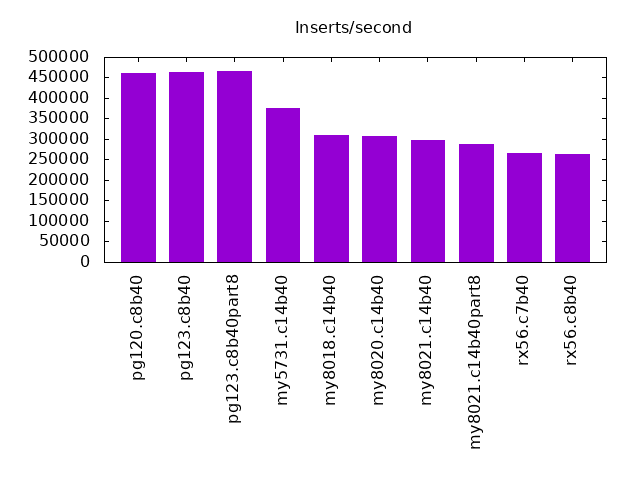
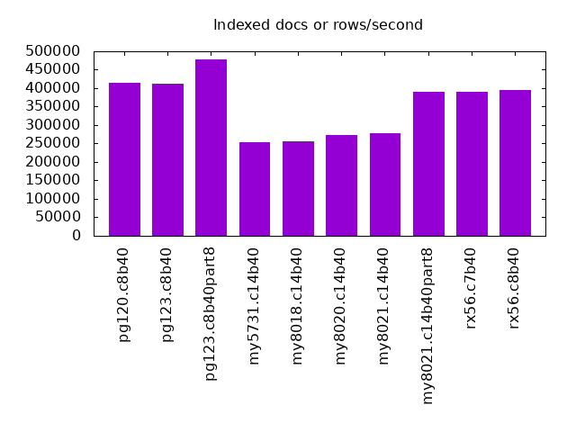
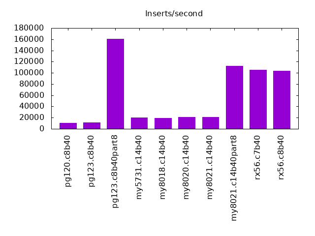
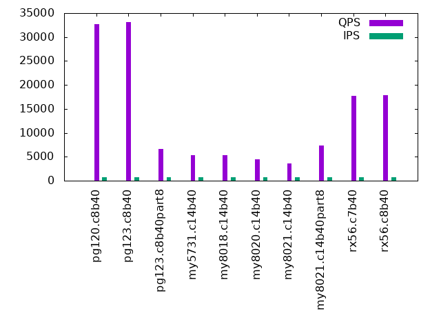
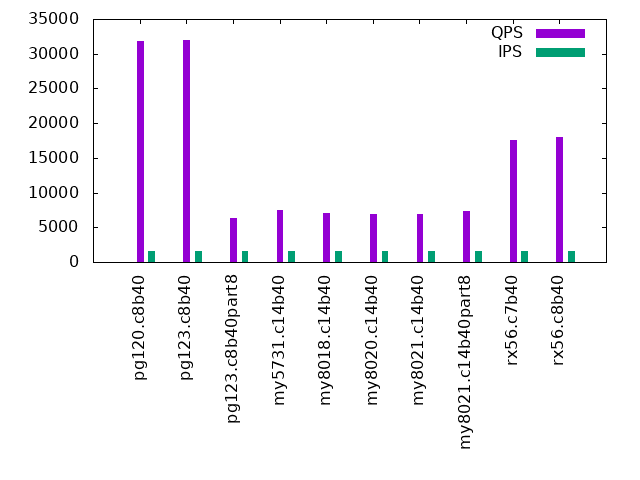
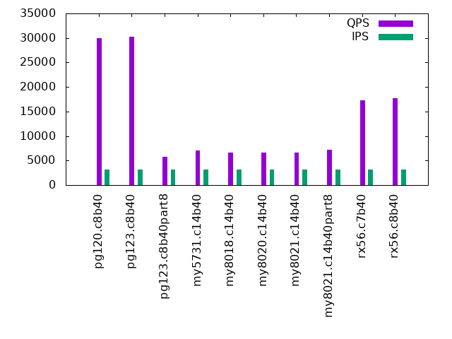
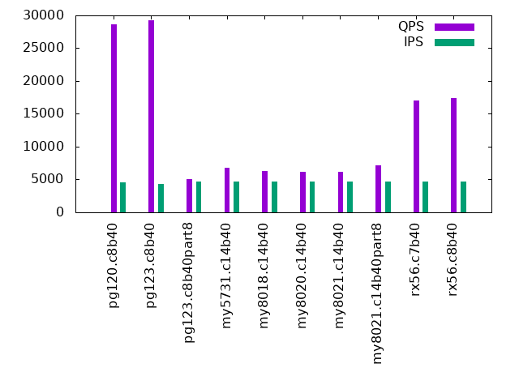
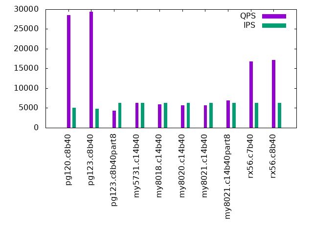
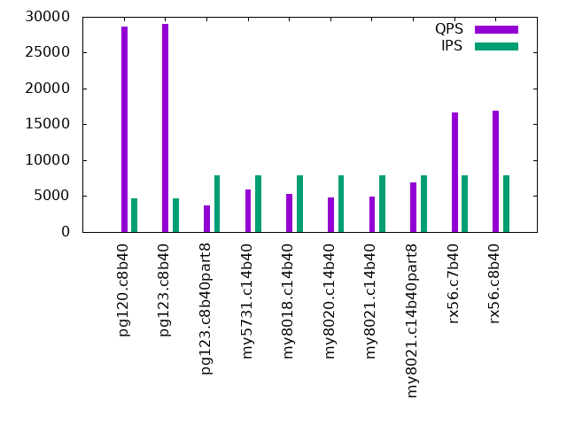

This is a report for the insert benchmark with 800M docs and 8 clients. It is generated by scripts (bash, awk, sed) and Tufte might not be impressed. An overview of the insert benchmark is here and a short update is here. Below, by DBMS, I mean DBMS+version.config. An example is my8020.c10b40 where my means MySQL, 8020 is version 8.0.20 and c10b40 is the name for the configuration file. All configurations are stored here.
The test server is a c3.8xlarge host with 20,000 EBS PIOPs, 60G RAM and 16 CPU cores (HT disabled). Clients and the DBMS share one server.
The tested DBMS are:
The numbers are inserts/s for l.i0 and l.i1, indexed docs (or rows) /s for l.x and queries/s for q*.2. The values are the average rate over the entire test for inserts (IPS) and queries (QPS). The range of values for IPS and QPS is split into 3 parts: bottom 25%, middle 50%, top 25%. Values in the bottom 25% have a red background, values in the top 25% have a green background and values in the middle have no color. A gray background is used for values that can be ignored because the DBMS did not sustain the target insert rate. Red backgrounds are not used when the minimum value is within 80% of the max value.
| dbms | l.i0 | l.x | l.i1 | q100.2 | q200.2 | q400.2 | q600.2 | q800.2 | q1000.2 |
|---|---|---|---|---|---|---|---|---|---|
| pg120.c8b40 | 461627 | 414130 | 10616 | 32682 | 31893 | 29972 | 28589 | 28464 | 28628 |
| pg123.c8b40 | 464306 | 411151 | 11034 | 33150 | 31923 | 30215 | 29232 | 29338 | 28981 |
| pg123.c8b40part8 | 466200 | 478529 | 160642 | 6670 | 6308 | 5736 | 5080 | 4380 | 3728 |
| my5731.c14b40 | 376648 | 252796 | 20015 | 5264 | 7507 | 7102 | 6777 | 6355 | 5865 |
| my8018.c14b40 | 309598 | 257267 | 19007 | 5384 | 6987 | 6664 | 6333 | 5926 | 5266 |
| my8020.c14b40 | 306984 | 272421 | 20774 | 4489 | 6906 | 6577 | 6183 | 5663 | 4848 |
| my8021.c14b40 | 298730 | 278780 | 20904 | 3558 | 6895 | 6570 | 6164 | 5670 | 4980 |
| my8021.c14b40part8 | 287047 | 389343 | 112202 | 7362 | 7302 | 7229 | 7159 | 6943 | 6853 |
| rx56.c7b40 | 266312 | 389343 | 105541 | 17699 | 17629 | 17346 | 17071 | 16834 | 16637 |
| rx56.c8b40 | 263158 | 396285 | 103359 | 17900 | 17935 | 17708 | 17450 | 17170 | 16966 |
This lists the average rate of inserts/s for the tests that do inserts concurrent with queries. For such tests the query rate is listed in the table above. The read+write tests are setup so that the insert rate should match the target rate every second. Cells that are not at least 95% of the target have a red background to indicate a failure to satisfy the target.
| dbms | q100.2 | q200.2 | q400.2 | q600.2 | q800.2 | q1000.2 |
|---|---|---|---|---|---|---|
| pg120.c8b40 | 790 | 1578 | 3158 | 4528 | 5039 | 4748 |
| pg123.c8b40 | 789 | 1579 | 3158 | 4314 | 4762 | 4669 |
| pg123.c8b40part8 | 790 | 1580 | 3160 | 4737 | 6316 | 7899 |
| my5731.c14b40 | 790 | 1580 | 3160 | 4739 | 6319 | 7899 |
| my8018.c14b40 | 790 | 1580 | 3160 | 4739 | 6319 | 7899 |
| my8020.c14b40 | 790 | 1580 | 3160 | 4739 | 6319 | 7899 |
| my8021.c14b40 | 789 | 1580 | 3160 | 4739 | 6319 | 7899 |
| my8021.c14b40part8 | 789 | 1579 | 3158 | 4739 | 6316 | 7899 |
| rx56.c7b40 | 790 | 1580 | 3158 | 4739 | 6319 | 7899 |
| rx56.c8b40 | 790 | 1580 | 3160 | 4739 | 6319 | 7899 |
| target | 800 | 1600 | 3200 | 4800 | 6400 | 8000 |
l.i0: load without secondary indexes. Graphs for performance per 1-second interval are here.
Average throughput:
Insert response time histogram: each cell has the percentage of responses that take <= the time in the header and max is the max response time in seconds. For the max column values in the top 25% of the range have a red background and in the bottom 25% of the range have a green background. The red background is not used when the min value is within 80% of the max value.
| dbms | 256us | 1ms | 4ms | 16ms | 64ms | 256ms | 1s | 4s | 16s | gt | max |
|---|---|---|---|---|---|---|---|---|---|---|---|
| pg120.c8b40 | 98.748 | 1.230 | 0.019 | 0.003 | nonzero | 0.584 | |||||
| pg123.c8b40 | 98.749 | 1.228 | 0.018 | 0.004 | nonzero | 0.300 | |||||
| pg123.c8b40part8 | 98.813 | 1.167 | 0.016 | 0.004 | nonzero | 0.793 | |||||
| my5731.c14b40 | 98.762 | 1.023 | 0.162 | 0.033 | 0.021 | 0.424 | |||||
| my8018.c14b40 | 96.576 | 3.169 | 0.203 | 0.038 | 0.013 | 0.446 | |||||
| my8020.c14b40 | 96.820 | 2.955 | 0.186 | 0.022 | 0.017 | 0.568 | |||||
| my8021.c14b40 | 96.694 | 3.069 | 0.196 | 0.024 | 0.016 | 0.392 | |||||
| my8021.c14b40part8 | 96.504 | 3.279 | 0.182 | 0.021 | 0.014 | 0.384 | |||||
| rx56.c7b40 | 97.795 | 2.174 | 0.003 | 0.010 | 0.018 | 0.417 | |||||
| rx56.c8b40 | 97.328 | 2.640 | 0.004 | 0.014 | 0.014 | 0.568 |
Performance metrics for the DBMS listed above. Some are normalized by throughput, others are not. Legend for results is here.
ips qps rps rkbps wkbps rpq rkbpq wkbpi csps cpups cspq cpupq dbgb1 dbgb2 rss maxop p50 p99 tag 461627 0 167 1388 194746 0.000 0.003 0.422 35168 81.3 0.076 28 76.5 116.6 0.0 0.584 60633 45273 pg120.c8b40 464306 0 171 1423 195628 0.000 0.003 0.421 35749 81.8 0.077 28 76.5 116.6 0.0 0.300 60717 44447 pg123.c8b40 466200 0 0 3 191418 0.000 0.000 0.411 35224 81.7 0.076 28 76.5 116.6 0.0 0.793 60033 43446 pg123.c8b40part8 376648 0 0 3 138012 0.000 0.000 0.366 37774 75.4 0.100 32 52.7 86.2 43.4 0.424 49645 33363 my5731.c14b40 309598 0 0 4 118137 0.000 0.000 0.382 77510 77.0 0.250 40 52.5 86.1 43.6 0.446 40025 27669 my8018.c14b40 306984 0 0 4 116146 0.000 0.000 0.378 46232 76.4 0.151 40 52.5 86.1 43.6 0.568 39971 27665 my8020.c14b40 298730 0 0 3 112937 0.000 0.000 0.378 45105 76.4 0.151 41 52.5 86.1 43.6 0.392 38375 26480 my8021.c14b40 287047 0 0 3 108766 0.000 0.000 0.379 43968 75.6 0.153 42 53.1 86.6 43.6 0.384 36758 25671 my8021.c14b40part8 266312 0 3 11 119083 0.000 0.000 0.447 27543 71.5 0.103 43 39.0 41.1 6.4 0.417 34159 23371 rx56.c7b40 263158 0 0 0 97612 0.000 0.000 0.371 26898 72.8 0.102 44 20.4 22.5 5.8 0.568 33962 22874 rx56.c8b40
l.x: create secondary indexes.
Average throughput:
Performance metrics for the DBMS listed above. Some are normalized by throughput, others are not. Legend for results is here.
ips qps rps rkbps wkbps rpq rkbpq wkbpi csps cpups cspq cpupq dbgb1 dbgb2 rss maxop p50 p99 tag 414130 0 8209 130164 132487 0.020 0.314 0.320 14100 24.1 0.034 9 147.0 187.1 0.0 0.006 NA NA pg120.c8b40 411151 0 8149 129159 131389 0.020 0.314 0.320 14034 23.7 0.034 9 147.0 187.1 0.1 0.008 NA NA pg123.c8b40 478529 0 7258 115410 136624 0.015 0.241 0.286 12925 26.1 0.027 9 147.0 187.0 0.0 0.005 NA NA pg123.c8b40part8 252796 0 1459 124205 187515 0.006 0.491 0.742 16114 13.5 0.064 9 117.7 151.2 45.8 0.043 NA NA my5731.c14b40 257267 0 1345 107920 191190 0.005 0.419 0.743 22613 15.6 0.088 10 117.3 150.9 46.0 0.019 NA NA my8018.c14b40 272421 0 1598 136576 202184 0.006 0.501 0.742 18442 17.4 0.068 10 117.3 150.9 46.0 0.004 NA NA my8020.c14b40 278780 0 1629 139118 207242 0.006 0.499 0.743 19376 17.5 0.070 10 117.3 150.9 46.0 0.006 NA NA my8021.c14b40 389343 0 2015 79193 227046 0.005 0.203 0.583 36314 19.8 0.093 8 117.8 151.4 45.8 0.006 NA NA my8021.c14b40part8 389343 0 2976 79957 71035 0.008 0.205 0.182 5028 32.5 0.013 13 89.1 91.2 44.2 0.005 NA NA rx56.c7b40 396285 0 2241 61367 58052 0.006 0.155 0.146 4269 34.8 0.011 14 38.7 40.8 43.8 0.005 NA NA rx56.c8b40
l.i1: continue load after secondary indexes created. Graphs for performance per 1-second interval are here.
Average throughput:
Insert response time histogram: each cell has the percentage of responses that take <= the time in the header and max is the max response time in seconds. For the max column values in the top 25% of the range have a red background and in the bottom 25% of the range have a green background. The red background is not used when the min value is within 80% of the max value.
| dbms | 256us | 1ms | 4ms | 16ms | 64ms | 256ms | 1s | 4s | 16s | gt | max |
|---|---|---|---|---|---|---|---|---|---|---|---|
| pg120.c8b40 | 26.689 | 11.976 | 45.373 | 15.918 | 0.043 | nonzero | 1.111 | ||||
| pg123.c8b40 | 27.575 | 16.517 | 38.904 | 16.956 | 0.049 | nonzero | 1.085 | ||||
| pg123.c8b40part8 | 0.022 | 96.589 | 2.457 | 0.784 | 0.147 | 0.001 | 0.556 | ||||
| my5731.c14b40 | 3.525 | 87.296 | 4.993 | 2.411 | 1.769 | 0.006 | 1.935 | ||||
| my8018.c14b40 | 1.405 | 88.524 | 5.735 | 2.410 | 1.918 | 0.008 | 1.905 | ||||
| my8020.c14b40 | 7.231 | 85.241 | 3.406 | 2.472 | 1.645 | 0.005 | 1.499 | ||||
| my8021.c14b40 | 6.280 | 86.195 | 3.383 | 2.550 | 1.590 | 0.002 | 1.550 | ||||
| my8021.c14b40part8 | 95.348 | 4.121 | 0.411 | 0.102 | 0.018 | 0.697 | |||||
| rx56.c7b40 | 77.599 | 22.359 | 0.026 | 0.004 | 0.011 | 0.451 | |||||
| rx56.c8b40 | 74.731 | 25.223 | 0.031 | 0.005 | 0.011 | 0.540 |
Performance metrics for the DBMS listed above. Some are normalized by throughput, others are not. Legend for results is here.
ips qps rps rkbps wkbps rpq rkbpq wkbpi csps cpups cspq cpupq dbgb1 dbgb2 rss maxop p50 p99 tag 10616 0 3393 28180 131639 0.320 2.655 12.400 11174 18.2 1.053 274 171.2 211.2 0.0 1.111 1049 350 pg120.c8b40 11034 0 3324 27627 133424 0.301 2.504 12.092 11101 18.5 1.006 268 171.1 211.2 0.0 1.085 799 350 pg123.c8b40 160642 0 887 7744 172424 0.006 0.048 1.073 34709 59.7 0.216 59 164.9 205.0 0.0 0.556 25984 549 pg123.c8b40part8 20015 0 2642 42265 165907 0.132 2.112 8.289 30595 18.7 1.529 149 178.4 223.3 45.8 1.935 649 100 my5731.c14b40 19007 0 2532 40510 157596 0.133 2.131 8.292 73199 19.6 3.851 165 177.8 222.6 46.0 1.905 499 50 my8018.c14b40 20774 0 2612 41797 173975 0.126 2.012 8.375 74069 21.4 3.565 165 177.8 221.9 46.0 1.499 450 150 my8020.c14b40 20904 0 2641 42259 175885 0.126 2.022 8.414 73724 21.8 3.527 167 177.8 222.1 46.0 1.550 599 100 my8021.c14b40 112202 0 268 4293 157138 0.002 0.038 1.400 51304 60.9 0.457 87 132.8 166.3 45.8 0.697 15382 200 my8021.c14b40part8 105541 0 531 5500 127407 0.005 0.052 1.207 32547 49.4 0.308 75 98.8 99.1 42.0 0.451 13335 8240 rx56.c7b40 103359 0 764 9460 129827 0.007 0.092 1.256 31532 53.4 0.305 83 48.5 48.9 42.0 0.540 13042 8345 rx56.c8b40
q100.2: range queries with 100 insert/s per client, 2nd loop. Graphs for performance per 1-second interval are here.
Average throughput:
Query response time histogram: each cell has the percentage of responses that take <= the time in the header and max is the max response time in seconds. For max values in the top 25% of the range have a red background and in the bottom 25% of the range have a green background. The red background is not used when the min value is within 80% of the max value.
| dbms | 256us | 1ms | 4ms | 16ms | 64ms | 256ms | 1s | 4s | 16s | gt | max |
|---|---|---|---|---|---|---|---|---|---|---|---|
| pg120.c8b40 | 96.601 | 3.299 | 0.093 | 0.007 | nonzero | 0.022 | |||||
| pg123.c8b40 | 97.764 | 2.184 | 0.050 | 0.001 | nonzero | 0.024 | |||||
| pg123.c8b40part8 | 84.633 | 9.179 | 5.939 | 0.231 | 0.018 | nonzero | 0.301 | ||||
| my5731.c14b40 | 8.570 | 71.754 | 6.055 | 13.236 | 0.365 | 0.020 | 0.001 | 0.618 | |||
| my8018.c14b40 | 0.028 | 83.877 | 4.607 | 10.752 | 0.694 | 0.039 | 0.002 | 0.632 | |||
| my8020.c14b40 | 0.013 | 76.143 | 8.258 | 14.960 | 0.597 | 0.027 | 0.001 | 0.790 | |||
| my8021.c14b40 | 0.009 | 67.247 | 11.766 | 20.238 | 0.714 | 0.026 | 0.001 | 0.630 | |||
| my8021.c14b40part8 | 98.654 | 0.082 | 0.196 | 0.968 | 0.098 | 0.001 | nonzero | 2.383 | |||
| rx56.c7b40 | 99.989 | 0.011 | nonzero | nonzero | 0.028 | ||||||
| rx56.c8b40 | 99.980 | 0.019 | 0.001 | nonzero | 0.020 |
Insert response time histogram: each cell has the percentage of responses that take <= the time in the header and max is the max response time in seconds. For max values in the top 25% of the range have a red background and in the bottom 25% of the range have a green background. The red background is not used when the min value is within 80% of the max value.
| dbms | 256us | 1ms | 4ms | 16ms | 64ms | 256ms | 1s | 4s | 16s | gt | max |
|---|---|---|---|---|---|---|---|---|---|---|---|
| pg120.c8b40 | 0.038 | 44.212 | 55.448 | 0.302 | 0.495 | ||||||
| pg123.c8b40 | 66.083 | 33.684 | 0.233 | 0.628 | |||||||
| pg123.c8b40part8 | 17.118 | 79.618 | 2.979 | 0.285 | 0.231 | ||||||
| my5731.c14b40 | 8.028 | 90.653 | 1.257 | 0.062 | 0.155 | ||||||
| my8018.c14b40 | 18.101 | 79.913 | 1.778 | 0.208 | 0.176 | ||||||
| my8020.c14b40 | 5.233 | 94.111 | 0.615 | 0.042 | 0.126 | ||||||
| my8021.c14b40 | 2.858 | 96.677 | 0.441 | 0.024 | 0.080 | ||||||
| my8021.c14b40part8 | 87.347 | 12.420 | 0.233 | 0.033 | |||||||
| rx56.c7b40 | 98.316 | 1.677 | 0.007 | 0.020 | |||||||
| rx56.c8b40 | 97.069 | 2.872 | 0.059 | 0.039 |
Performance metrics for the DBMS listed above. Some are normalized by throughput, others are not. Legend for results is here.
ips qps rps rkbps wkbps rpq rkbpq wkbpi csps cpups cspq cpupq dbgb1 dbgb2 rss maxop p50 p99 tag 790 32682 609 5115 18269 0.019 0.157 23.129 126576 41.2 3.873 202 174.1 214.1 0.0 0.022 4174 3948 pg120.c8b40 789 33150 610 5096 9800 0.018 0.154 12.415 129061 40.6 3.893 196 174.0 214.1 0.0 0.024 4157 4075 pg123.c8b40 790 6670 4295 36682 3531 0.644 5.499 4.470 34958 23.6 5.241 566 165.6 205.6 0.0 0.301 799 416 pg123.c8b40part8 790 5264 7052 112834 52599 1.340 21.435 66.590 39505 12.2 7.505 371 178.6 223.5 45.6 0.618 272 112 my5731.c14b40 790 5384 5979 95661 50283 1.111 17.769 63.658 43169 13.2 8.018 392 178.0 222.8 45.5 0.632 240 96 my8018.c14b40 790 4489 6848 109565 50926 1.526 24.410 64.471 42497 11.6 9.468 413 178.0 222.1 45.5 0.790 256 112 my8020.c14b40 789 3558 7233 115725 52576 2.033 32.521 66.603 39868 9.9 11.204 445 178.0 222.3 45.4 0.630 272 144 my8021.c14b40 789 7362 4686 74968 4656 0.636 10.184 5.898 39390 24.8 5.351 539 133.2 166.8 45.3 2.383 1838 1774 my8021.c14b40part8 790 17699 0 0 276 0.000 0.000 0.349 72981 46.9 4.124 424 99.0 99.8 42.1 0.028 2237 2158 rx56.c7b40 790 17900 76 665 2313 0.004 0.037 2.928 73757 47.2 4.120 422 44.1 44.9 42.2 0.020 2237 2126 rx56.c8b40
q200.2: range queries with 200 insert/s per client, 2nd loop. Graphs for performance per 1-second interval are here.
Average throughput:
Query response time histogram: each cell has the percentage of responses that take <= the time in the header and max is the max response time in seconds. For max values in the top 25% of the range have a red background and in the bottom 25% of the range have a green background. The red background is not used when the min value is within 80% of the max value.
| dbms | 256us | 1ms | 4ms | 16ms | 64ms | 256ms | 1s | 4s | 16s | gt | max |
|---|---|---|---|---|---|---|---|---|---|---|---|
| pg120.c8b40 | 93.773 | 6.059 | 0.165 | 0.003 | nonzero | 0.020 | |||||
| pg123.c8b40 | 93.728 | 6.077 | 0.191 | 0.004 | nonzero | 0.036 | |||||
| pg123.c8b40part8 | 83.099 | 9.818 | 6.811 | 0.253 | 0.018 | nonzero | 0.308 | ||||
| my5731.c14b40 | 9.242 | 79.609 | 2.796 | 8.084 | 0.258 | 0.010 | nonzero | 0.579 | |||
| my8018.c14b40 | 0.041 | 89.287 | 2.479 | 7.672 | 0.499 | 0.022 | 0.001 | 0.949 | |||
| my8020.c14b40 | 0.013 | 87.704 | 3.206 | 8.777 | 0.288 | 0.012 | nonzero | 0.613 | |||
| my8021.c14b40 | 0.015 | 88.442 | 2.843 | 8.286 | 0.398 | 0.015 | 0.001 | 0.642 | |||
| my8021.c14b40part8 | 98.684 | 0.081 | 0.175 | 0.952 | 0.106 | 0.001 | nonzero | 2.514 | |||
| rx56.c7b40 | 99.971 | 0.028 | 0.001 | nonzero | 0.025 | ||||||
| rx56.c8b40 | 99.973 | 0.026 | 0.001 | nonzero | nonzero | 0.065 |
Insert response time histogram: each cell has the percentage of responses that take <= the time in the header and max is the max response time in seconds. For max values in the top 25% of the range have a red background and in the bottom 25% of the range have a green background. The red background is not used when the min value is within 80% of the max value.
| dbms | 256us | 1ms | 4ms | 16ms | 64ms | 256ms | 1s | 4s | 16s | gt | max |
|---|---|---|---|---|---|---|---|---|---|---|---|
| pg120.c8b40 | 51.759 | 48.122 | 0.120 | 0.470 | |||||||
| pg123.c8b40 | 34.144 | 65.444 | 0.411 | 0.556 | |||||||
| pg123.c8b40part8 | 94.622 | 5.092 | 0.262 | 0.024 | 0.186 | ||||||
| my5731.c14b40 | 21.309 | 77.799 | 0.851 | 0.042 | 0.102 | ||||||
| my8018.c14b40 | 19.889 | 79.372 | 0.719 | 0.019 | 0.002 | 0.310 | |||||
| my8020.c14b40 | 7.505 | 91.757 | 0.729 | 0.007 | 0.002 | 0.326 | |||||
| my8021.c14b40 | 11.186 | 88.205 | 0.590 | 0.017 | 0.002 | 0.677 | |||||
| my8021.c14b40part8 | 86.380 | 13.283 | 0.333 | 0.003 | 0.107 | ||||||
| rx56.c7b40 | 95.052 | 4.927 | 0.021 | 0.025 | |||||||
| rx56.c8b40 | 93.839 | 6.099 | 0.062 | 0.041 |
Performance metrics for the DBMS listed above. Some are normalized by throughput, others are not. Legend for results is here.
ips qps rps rkbps wkbps rpq rkbpq wkbpi csps cpups cspq cpupq dbgb1 dbgb2 rss maxop p50 p99 tag 1578 31893 1363 11318 32642 0.043 0.355 20.686 124346 43.2 3.899 217 180.3 220.3 0.0 0.020 4079 3740 pg120.c8b40 1579 31923 1376 11507 34761 0.043 0.360 22.016 124237 43.8 3.892 220 180.3 220.3 0.0 0.036 4139 3662 pg123.c8b40 1580 6308 4556 38945 3358 0.722 6.174 2.126 34102 22.8 5.406 578 166.7 206.8 0.0 0.308 735 400 pg123.c8b40part8 1580 7507 6194 99109 69137 0.825 13.202 43.763 47561 16.7 6.335 356 179.0 223.9 45.0 0.579 256 144 my5731.c14b40 1580 6987 5569 89109 68232 0.797 12.754 43.190 50145 16.9 7.177 387 178.4 223.2 45.2 0.949 240 112 my8018.c14b40 1580 6906 6199 99178 71236 0.898 14.362 45.092 52926 17.2 7.664 399 178.4 222.4 45.2 0.613 256 144 my8020.c14b40 1580 6895 5882 94105 69648 0.853 13.648 44.087 51978 17.0 7.539 394 178.4 222.6 45.2 0.642 240 128 my8021.c14b40 1579 7302 4653 74443 5612 0.637 10.194 3.554 39315 25.2 5.384 552 134.5 168.1 44.8 2.514 1838 1742 my8021.c14b40part8 1580 17629 31 336 2763 0.002 0.019 1.749 72657 47.6 4.122 432 99.7 101.1 42.1 0.025 2237 2046 rx56.c7b40 1580 17935 39 362 2012 0.002 0.020 1.273 73858 47.4 4.118 423 44.5 46.0 42.3 0.065 2285 2109 rx56.c8b40
q400.2: range queries with 400 insert/s per client, 2nd loop. Graphs for performance per 1-second interval are here.
Average throughput:
Query response time histogram: each cell has the percentage of responses that take <= the time in the header and max is the max response time in seconds. For max values in the top 25% of the range have a red background and in the bottom 25% of the range have a green background. The red background is not used when the min value is within 80% of the max value.
| dbms | 256us | 1ms | 4ms | 16ms | 64ms | 256ms | 1s | 4s | 16s | gt | max |
|---|---|---|---|---|---|---|---|---|---|---|---|
| pg120.c8b40 | 85.886 | 13.855 | 0.253 | 0.006 | nonzero | 0.019 | |||||
| pg123.c8b40 | 87.246 | 12.514 | 0.235 | 0.006 | nonzero | 0.048 | |||||
| pg123.c8b40part8 | 80.375 | 10.810 | 8.497 | 0.302 | 0.017 | nonzero | 0.475 | ||||
| my5731.c14b40 | 5.318 | 82.644 | 3.118 | 8.648 | 0.262 | 0.010 | nonzero | 0.654 | |||
| my8018.c14b40 | 0.028 | 88.724 | 2.668 | 8.026 | 0.526 | 0.027 | 0.001 | 0.678 | |||
| my8020.c14b40 | 0.011 | 87.188 | 3.389 | 9.032 | 0.364 | 0.015 | 0.001 | 0.688 | |||
| my8021.c14b40 | 0.012 | 87.535 | 3.213 | 8.806 | 0.416 | 0.017 | 0.001 | 0.605 | |||
| my8021.c14b40part8 | 98.726 | 0.090 | 0.144 | 0.908 | 0.131 | 0.001 | nonzero | 2.240 | |||
| rx56.c7b40 | 99.915 | 0.076 | 0.009 | nonzero | nonzero | 0.087 | |||||
| rx56.c8b40 | 99.926 | 0.065 | 0.009 | nonzero | nonzero | 0.083 |
Insert response time histogram: each cell has the percentage of responses that take <= the time in the header and max is the max response time in seconds. For max values in the top 25% of the range have a red background and in the bottom 25% of the range have a green background. The red background is not used when the min value is within 80% of the max value.
| dbms | 256us | 1ms | 4ms | 16ms | 64ms | 256ms | 1s | 4s | 16s | gt | max |
|---|---|---|---|---|---|---|---|---|---|---|---|
| pg120.c8b40 | 31.739 | 68.174 | 0.088 | 0.578 | |||||||
| pg123.c8b40 | 21.022 | 78.646 | 0.332 | 0.553 | |||||||
| pg123.c8b40part8 | 99.097 | 0.876 | 0.024 | 0.003 | 0.120 | ||||||
| my5731.c14b40 | 13.843 | 84.959 | 1.186 | 0.012 | 0.105 | ||||||
| my8018.c14b40 | 4.165 | 94.179 | 1.544 | 0.110 | 0.002 | 0.345 | |||||
| my8020.c14b40 | 4.018 | 95.077 | 0.868 | 0.036 | 0.001 | 0.363 | |||||
| my8021.c14b40 | 1.374 | 97.470 | 1.132 | 0.023 | 0.001 | 0.362 | |||||
| my8021.c14b40part8 | 82.737 | 16.970 | 0.292 | 0.001 | 0.092 | ||||||
| rx56.c7b40 | 91.791 | 8.138 | 0.071 | 0.038 | |||||||
| rx56.c8b40 | 92.646 | 7.295 | 0.059 | 0.031 |
Performance metrics for the DBMS listed above. Some are normalized by throughput, others are not. Legend for results is here.
ips qps rps rkbps wkbps rpq rkbpq wkbpi csps cpups cspq cpupq dbgb1 dbgb2 rss maxop p50 p99 tag 3158 29972 3398 28066 67560 0.113 0.936 21.395 118810 48.0 3.964 256 192.9 233.0 0.0 0.019 3980 3100 pg120.c8b40 3158 30215 3393 28224 67798 0.112 0.934 21.470 119538 48.6 3.956 257 192.9 233.0 0.0 0.048 3931 3132 pg123.c8b40 3160 5736 4955 42252 4277 0.864 7.367 1.354 32934 21.5 5.742 600 169.1 206.2 0.0 0.475 623 336 pg123.c8b40part8 3160 7102 6175 98806 96516 0.869 13.911 30.547 48455 18.0 6.822 405 179.8 224.7 44.7 0.654 256 144 my5731.c14b40 3160 6664 5492 87868 92426 0.824 13.185 29.252 51574 18.1 7.739 435 179.1 223.9 44.6 0.678 224 96 my8018.c14b40 3160 6577 6026 96421 95553 0.916 14.660 30.242 54581 18.5 8.299 450 179.1 223.2 44.9 0.688 240 112 my8020.c14b40 3160 6570 5885 94167 94285 0.896 14.334 29.841 54181 18.5 8.247 451 179.1 223.4 44.9 0.605 240 144 my8021.c14b40 3158 7229 4700 75201 10254 0.650 10.402 3.247 40185 25.8 5.559 571 137.1 170.6 44.3 2.240 1807 1710 my8021.c14b40part8 3158 17346 154 1808 5794 0.009 0.104 1.835 71857 48.6 4.143 448 101.0 104.0 42.2 0.087 2190 2015 rx56.c7b40 3160 17708 81 958 4567 0.005 0.054 1.446 73014 48.5 4.123 438 45.2 48.1 42.7 0.083 2253 2046 rx56.c8b40
q600.2: range queries with 600 insert/s per client, 2nd loop. Graphs for performance per 1-second interval are here.
Average throughput:
Query response time histogram: each cell has the percentage of responses that take <= the time in the header and max is the max response time in seconds. For max values in the top 25% of the range have a red background and in the bottom 25% of the range have a green background. The red background is not used when the min value is within 80% of the max value.
| dbms | 256us | 1ms | 4ms | 16ms | 64ms | 256ms | 1s | 4s | 16s | gt | max |
|---|---|---|---|---|---|---|---|---|---|---|---|
| pg120.c8b40 | 79.554 | 20.139 | 0.300 | 0.007 | nonzero | 0.056 | |||||
| pg123.c8b40 | 82.901 | 16.786 | 0.306 | 0.006 | nonzero | 0.036 | |||||
| pg123.c8b40part8 | 76.114 | 12.542 | 10.974 | 0.346 | 0.023 | nonzero | 0.484 | ||||
| my5731.c14b40 | 4.183 | 82.803 | 3.561 | 9.173 | 0.271 | 0.009 | nonzero | 0.540 | |||
| my8018.c14b40 | 0.020 | 87.523 | 3.178 | 8.704 | 0.554 | 0.020 | 0.001 | 0.547 | |||
| my8020.c14b40 | 0.008 | 86.181 | 3.841 | 9.536 | 0.414 | 0.019 | 0.001 | 0.595 | |||
| my8021.c14b40 | 0.008 | 86.346 | 3.761 | 9.385 | 0.482 | 0.017 | nonzero | 0.686 | |||
| my8021.c14b40part8 | 98.719 | 0.114 | 0.123 | 0.904 | 0.138 | 0.001 | nonzero | 2.288 | |||
| rx56.c7b40 | 99.816 | 0.169 | 0.014 | nonzero | nonzero | 0.077 | |||||
| rx56.c8b40 | 99.828 | 0.155 | 0.017 | nonzero | nonzero | 0.078 |
Insert response time histogram: each cell has the percentage of responses that take <= the time in the header and max is the max response time in seconds. For max values in the top 25% of the range have a red background and in the bottom 25% of the range have a green background. The red background is not used when the min value is within 80% of the max value.
| dbms | 256us | 1ms | 4ms | 16ms | 64ms | 256ms | 1s | 4s | 16s | gt | max |
|---|---|---|---|---|---|---|---|---|---|---|---|
| pg120.c8b40 | 19.599 | 80.264 | 0.137 | 0.493 | |||||||
| pg123.c8b40 | 14.443 | 85.223 | 0.334 | 0.537 | |||||||
| pg123.c8b40part8 | 99.023 | 0.941 | 0.028 | 0.008 | 0.198 | ||||||
| my5731.c14b40 | 7.057 | 91.718 | 1.194 | 0.030 | 0.001 | 0.464 | |||||
| my8018.c14b40 | 2.581 | 95.504 | 1.866 | 0.049 | 0.001 | 0.496 | |||||
| my8020.c14b40 | 0.462 | 97.705 | 1.785 | 0.047 | 0.001 | 0.793 | |||||
| my8021.c14b40 | 0.494 | 97.560 | 1.899 | 0.046 | 0.001 | 0.335 | |||||
| my8021.c14b40part8 | 77.462 | 22.302 | 0.235 | 0.002 | 0.172 | ||||||
| rx56.c7b40 | 78.424 | 21.391 | 0.185 | 0.040 | |||||||
| rx56.c8b40 | 82.027 | 17.622 | 0.346 | 0.005 | 0.073 |
Performance metrics for the DBMS listed above. Some are normalized by throughput, others are not. Legend for results is here.
ips qps rps rkbps wkbps rpq rkbpq wkbpi csps cpups cspq cpupq dbgb1 dbgb2 rss maxop p50 p99 tag 4528 28589 5543 45290 83730 0.194 1.584 18.490 115923 51.3 4.055 287 206.9 247.0 0.0 0.056 3580 2957 pg120.c8b40 4314 29232 5068 41678 80995 0.173 1.426 18.777 117591 50.8 4.023 278 206.9 246.9 0.0 0.036 3724 3037 pg123.c8b40 4737 5080 5606 47584 6089 1.104 9.368 1.285 31954 19.7 6.291 621 172.9 207.7 0.0 0.484 559 256 pg123.c8b40part8 4739 6777 6227 99628 114410 0.919 14.701 24.140 49244 18.9 7.266 446 180.9 225.8 44.4 0.540 240 144 my5731.c14b40 4739 6333 5624 89976 107164 0.888 14.208 22.611 52598 19.3 8.306 488 180.2 225.1 44.3 0.547 224 112 my8018.c14b40 4739 6183 5955 95277 111914 0.963 15.409 23.614 55520 19.6 8.979 507 180.2 224.3 44.6 0.595 240 112 my8020.c14b40 4739 6164 5894 94300 111589 0.956 15.297 23.545 55263 19.7 8.965 511 180.2 224.5 44.6 0.686 224 128 my8021.c14b40 4739 7159 4762 76193 13337 0.665 10.644 2.814 40807 27.0 5.700 603 139.5 173.0 44.3 2.288 1806 1710 my8021.c14b40part8 4739 17071 303 3454 11194 0.018 0.202 2.362 70966 49.6 4.157 465 103.0 104.2 42.8 0.077 2174 1950 rx56.c7b40 4739 17450 187 1796 8379 0.011 0.103 1.768 72098 49.9 4.132 458 46.0 47.2 42.8 0.078 2206 2014 rx56.c8b40
q800.2: range queries with 800 insert/s per client, 2nd loop. Graphs for performance per 1-second interval are here.
Average throughput:
Query response time histogram: each cell has the percentage of responses that take <= the time in the header and max is the max response time in seconds. For max values in the top 25% of the range have a red background and in the bottom 25% of the range have a green background. The red background is not used when the min value is within 80% of the max value.
| dbms | 256us | 1ms | 4ms | 16ms | 64ms | 256ms | 1s | 4s | 16s | gt | max |
|---|---|---|---|---|---|---|---|---|---|---|---|
| pg120.c8b40 | 78.466 | 21.191 | 0.338 | 0.006 | nonzero | nonzero | 0.066 | ||||
| pg123.c8b40 | 82.654 | 17.072 | 0.268 | 0.005 | nonzero | nonzero | 0.131 | ||||
| pg123.c8b40part8 | 71.857 | 13.158 | 14.502 | 0.457 | 0.025 | nonzero | 0.347 | ||||
| my5731.c14b40 | 3.378 | 82.845 | 3.924 | 9.391 | 0.454 | 0.009 | nonzero | 0.491 | |||
| my8018.c14b40 | 0.014 | 86.420 | 3.711 | 9.110 | 0.726 | 0.018 | nonzero | 0.677 | |||
| my8020.c14b40 | 0.005 | 83.662 | 5.124 | 10.753 | 0.441 | 0.015 | 0.001 | 0.614 | |||
| my8021.c14b40 | 0.006 | 84.449 | 4.745 | 10.213 | 0.564 | 0.023 | 0.001 | 0.647 | |||
| my8021.c14b40part8 | 98.731 | 0.156 | 0.090 | 0.843 | 0.179 | 0.001 | nonzero | 3.013 | |||
| rx56.c7b40 | 99.642 | 0.337 | 0.021 | nonzero | nonzero | 0.082 | |||||
| rx56.c8b40 | 99.681 | 0.297 | 0.022 | nonzero | nonzero | 0.173 |
Insert response time histogram: each cell has the percentage of responses that take <= the time in the header and max is the max response time in seconds. For max values in the top 25% of the range have a red background and in the bottom 25% of the range have a green background. The red background is not used when the min value is within 80% of the max value.
| dbms | 256us | 1ms | 4ms | 16ms | 64ms | 256ms | 1s | 4s | 16s | gt | max |
|---|---|---|---|---|---|---|---|---|---|---|---|
| pg120.c8b40 | 28.591 | 71.160 | 0.249 | 0.635 | |||||||
| pg123.c8b40 | 25.741 | 73.711 | 0.549 | 0.632 | |||||||
| pg123.c8b40part8 | 98.648 | 1.301 | 0.047 | 0.003 | 0.168 | ||||||
| my5731.c14b40 | 1.862 | 95.154 | 2.932 | 0.050 | 0.001 | 0.471 | |||||
| my8018.c14b40 | 0.464 | 97.121 | 2.338 | 0.076 | 0.001 | 0.397 | |||||
| my8020.c14b40 | 0.037 | 98.447 | 1.469 | 0.048 | 0.221 | ||||||
| my8021.c14b40 | 0.007 | 98.192 | 1.757 | 0.044 | 0.180 | ||||||
| my8021.c14b40part8 | 68.143 | 31.276 | 0.550 | 0.017 | 0.011 | 0.002 | 1.725 | ||||
| rx56.c7b40 | 48.709 | 50.188 | 1.103 | 0.061 | |||||||
| rx56.c8b40 | 47.346 | 51.795 | 0.859 | 0.050 |
Performance metrics for the DBMS listed above. Some are normalized by throughput, others are not. Legend for results is here.
ips qps rps rkbps wkbps rpq rkbpq wkbpi csps cpups cspq cpupq dbgb1 dbgb2 rss maxop p50 p99 tag 5039 28464 5728 46466 83413 0.201 1.632 16.553 115766 51.2 4.067 288 212.7 252.7 0.0 0.066 3884 2941 pg120.c8b40 4762 29338 5323 43415 76760 0.181 1.480 16.119 118755 50.0 4.048 273 212.7 252.7 0.0 0.131 3822 3052 pg123.c8b40 6316 4380 5985 50499 8301 1.366 11.529 1.314 30306 18.0 6.919 658 177.6 211.0 0.0 0.347 543 240 pg123.c8b40part8 6319 6355 6065 97036 123702 0.954 15.269 19.576 49012 19.8 7.712 499 182.4 227.3 44.2 0.491 224 144 my5731.c14b40 6319 5926 5565 89035 116770 0.939 15.024 18.479 53039 20.4 8.950 551 181.8 226.6 44.3 0.677 208 128 my8018.c14b40 6319 5663 6167 98678 125186 1.089 17.426 19.810 56295 20.6 9.942 582 181.8 225.8 44.6 0.614 224 128 my8020.c14b40 6319 5670 5941 95058 122611 1.048 16.764 19.403 55609 20.7 9.807 584 181.8 226.0 44.6 0.647 224 96 my8021.c14b40 6316 6943 5095 81524 32666 0.734 11.741 5.172 45380 28.6 6.536 659 144.7 178.3 44.3 3.013 1758 1646 my8021.c14b40part8 6319 16834 363 4415 13972 0.022 0.262 2.211 70281 50.6 4.175 481 105.6 105.7 42.4 0.082 2126 1934 rx56.c7b40 6319 17170 327 2863 11537 0.019 0.167 1.826 71272 51.1 4.151 476 47.3 47.5 42.5 0.173 2174 1982 rx56.c8b40
q1000.2: range queries with 1000 insert/s per client, 2nd loop. Graphs for performance per 1-second interval are here.
Average throughput:
Query response time histogram: each cell has the percentage of responses that take <= the time in the header and max is the max response time in seconds. For max values in the top 25% of the range have a red background and in the bottom 25% of the range have a green background. The red background is not used when the min value is within 80% of the max value.
| dbms | 256us | 1ms | 4ms | 16ms | 64ms | 256ms | 1s | 4s | 16s | gt | max |
|---|---|---|---|---|---|---|---|---|---|---|---|
| pg120.c8b40 | 78.997 | 20.664 | 0.333 | 0.006 | nonzero | nonzero | 0.249 | ||||
| pg123.c8b40 | 82.065 | 17.622 | 0.307 | 0.006 | nonzero | 0.051 | |||||
| pg123.c8b40part8 | 66.173 | 13.765 | 19.448 | 0.588 | 0.025 | nonzero | 0.560 | ||||
| my5731.c14b40 | 2.874 | 82.452 | 4.335 | 9.593 | 0.737 | 0.010 | nonzero | 0.521 | |||
| my8018.c14b40 | 0.008 | 83.934 | 4.937 | 10.125 | 0.975 | 0.021 | 0.001 | 0.621 | |||
| my8020.c14b40 | 0.004 | 79.828 | 6.961 | 12.511 | 0.678 | 0.017 | 0.001 | 0.521 | |||
| my8021.c14b40 | 0.005 | 82.152 | 5.872 | 11.067 | 0.869 | 0.034 | 0.001 | 0.596 | |||
| my8021.c14b40part8 | 98.727 | 0.228 | 0.071 | 0.674 | 0.299 | 0.001 | nonzero | 1.088 | |||
| rx56.c7b40 | 99.478 | 0.497 | 0.025 | nonzero | nonzero | 0.121 | |||||
| rx56.c8b40 | 99.536 | 0.439 | 0.025 | nonzero | nonzero | 0.082 |
Insert response time histogram: each cell has the percentage of responses that take <= the time in the header and max is the max response time in seconds. For max values in the top 25% of the range have a red background and in the bottom 25% of the range have a green background. The red background is not used when the min value is within 80% of the max value.
| dbms | 256us | 1ms | 4ms | 16ms | 64ms | 256ms | 1s | 4s | 16s | gt | max |
|---|---|---|---|---|---|---|---|---|---|---|---|
| pg120.c8b40 | 22.385 | 77.266 | 0.349 | 0.572 | |||||||
| pg123.c8b40 | 21.836 | 77.737 | 0.427 | 0.736 | |||||||
| pg123.c8b40part8 | 98.718 | 1.238 | 0.042 | 0.003 | 0.131 | ||||||
| my5731.c14b40 | 0.279 | 95.537 | 4.144 | 0.040 | 0.160 | ||||||
| my8018.c14b40 | 0.097 | 95.940 | 3.895 | 0.069 | 0.195 | ||||||
| my8020.c14b40 | 0.009 | 97.583 | 2.372 | 0.037 | 0.155 | ||||||
| my8021.c14b40 | 0.001 | 95.263 | 4.593 | 0.142 | 0.001 | 0.387 | |||||
| my8021.c14b40part8 | 25.411 | 73.908 | 0.632 | 0.045 | 0.004 | 0.608 | |||||
| rx56.c7b40 | 47.783 | 51.485 | 0.730 | 0.002 | 0.072 | ||||||
| rx56.c8b40 | 48.078 | 51.111 | 0.811 | nonzero | 0.066 |
Performance metrics for the DBMS listed above. Some are normalized by throughput, others are not. Legend for results is here.
ips qps rps rkbps wkbps rpq rkbpq wkbpi csps cpups cspq cpupq dbgb1 dbgb2 rss maxop p50 p99 tag 4748 28628 5373 43503 79700 0.188 1.520 16.787 115831 51.1 4.046 286 215.7 255.8 0.0 0.249 3676 2957 pg120.c8b40 4669 28981 5268 42872 79442 0.182 1.479 17.014 117138 50.2 4.042 277 215.7 255.8 0.0 0.051 3564 2989 pg123.c8b40 7899 3728 6553 55203 10169 1.758 14.808 1.287 29221 16.4 7.838 704 183.8 216.5 0.0 0.560 479 272 pg123.c8b40part8 7899 5865 5832 93319 129753 0.994 15.911 16.427 48162 20.5 8.211 559 184.3 229.2 43.9 0.521 208 128 my5731.c14b40 7899 5266 5595 89515 124987 1.062 16.999 15.823 52619 20.9 9.992 635 183.7 228.5 44.1 0.621 192 128 my8018.c14b40 7899 4848 6186 98976 133510 1.276 20.417 16.902 55138 20.6 11.374 680 183.7 227.7 44.6 0.521 208 112 my8020.c14b40 7899 4980 5767 92268 127558 1.158 18.529 16.149 54355 20.7 10.915 665 183.7 227.9 44.6 0.596 192 96 my8021.c14b40 7899 6853 5047 80751 42492 0.737 11.784 5.379 46785 30.3 6.827 707 149.5 183.1 44.3 1.088 1742 1615 my8021.c14b40part8 7899 16637 440 5299 16026 0.026 0.319 2.029 69831 51.2 4.197 492 108.7 112.5 42.7 0.121 2110 1918 rx56.c7b40 7899 16966 444 3490 13251 0.026 0.206 1.678 70645 52.0 4.164 490 48.7 52.5 42.8 0.082 2158 1966 rx56.c8b40
l.i0: load without secondary indexes
Performance metrics for all DBMS, not just the ones listed above. Some are normalized by throughput, others are not. Legend for results is here.
ips qps rps rkbps wkbps rpq rkbpq wkbpi csps cpups cspq cpupq dbgb1 dbgb2 rss maxop p50 p99 tag 464306 0 171 1423 195628 0.000 0.003 0.421 35749 81.8 0.077 28 76.5 116.6 0.0 0.300 60717 44447 pg123.c8b40 298730 0 0 3 112937 0.000 0.000 0.378 45105 76.4 0.151 41 52.5 86.1 43.6 0.392 38375 26480 my8021.c14b40 266312 0 3 11 119083 0.000 0.000 0.447 27543 71.5 0.103 43 39.0 41.1 6.4 0.417 34159 23371 rx56.c7b40 263158 0 0 0 97612 0.000 0.000 0.371 26898 72.8 0.102 44 20.4 22.5 5.8 0.568 33962 22874 rx56.c8b40 - 461627 0 167 1388 194746 0.000 0.003 0.422 35168 81.3 0.076 28 76.5 116.6 0.0 0.584 60633 45273 pg120.c8b40 464306 0 171 1423 195628 0.000 0.003 0.421 35749 81.8 0.077 28 76.5 116.6 0.0 0.300 60717 44447 pg123.c8b40 - 376648 0 0 3 138012 0.000 0.000 0.366 37774 75.4 0.100 32 52.7 86.2 43.4 0.424 49645 33363 my5731.c14b40 309598 0 0 4 118137 0.000 0.000 0.382 77510 77.0 0.250 40 52.5 86.1 43.6 0.446 40025 27669 my8018.c14b40 306984 0 0 4 116146 0.000 0.000 0.378 46232 76.4 0.151 40 52.5 86.1 43.6 0.568 39971 27665 my8020.c14b40 298730 0 0 3 112937 0.000 0.000 0.378 45105 76.4 0.151 41 52.5 86.1 43.6 0.392 38375 26480 my8021.c14b40 - 373657 0 0 2 129293 0.000 0.000 0.346 39517 75.4 0.106 32 54.0 87.5 46.0 0.427 49045 33363 my5731.c15b40 304182 0 0 2 114757 0.000 0.000 0.377 78469 76.1 0.258 40 53.1 86.7 46.2 0.637 39776 26771 my8018.c15b40 298619 0 0 2 113312 0.000 0.000 0.379 48260 76.5 0.162 41 53.1 86.7 46.1 0.434 39278 26870 my8020.c15b40 287150 0 0 2 108965 0.000 0.000 0.379 46944 76.1 0.163 42 53.1 86.7 46.1 0.459 37057 25471 my8021.c15b40 - 266312 0 3 11 119083 0.000 0.000 0.447 27543 71.5 0.103 43 39.0 41.1 6.4 0.417 34159 23371 rx56.c7b40 263158 0 0 0 97612 0.000 0.000 0.371 26898 72.8 0.102 44 20.4 22.5 5.8 0.568 33962 22874 rx56.c8b40 - 466200 0 0 3 191418 0.000 0.000 0.411 35224 81.7 0.076 28 76.5 116.6 0.0 0.793 60033 43446 pg123.c8b40part8 - 369515 0 0 2 134626 0.000 0.000 0.364 37349 74.5 0.101 32 53.1 86.6 43.4 0.398 48845 33263 my5731.c14b40part8 304414 0 0 4 115845 0.000 0.000 0.381 75724 75.8 0.249 40 53.1 86.6 43.6 0.529 39655 25072 my8018.c14b40part8 297066 0 0 3 112440 0.000 0.000 0.379 44991 76.1 0.151 41 53.1 86.6 43.6 0.409 38557 26577 my8020.c14b40part8 287047 0 0 3 108766 0.000 0.000 0.379 43968 75.6 0.153 42 53.1 86.6 43.6 0.384 36758 25671 my8021.c14b40part8 - 262553 0 0 1 88859 0.000 0.000 0.338 28386 53.9 0.108 33 54.3 87.8 46.0 6.280 45349 0 my5731.c15b40part8 233372 0 0 2 82121 0.000 0.000 0.352 59217 58.6 0.254 40 53.7 87.2 46.2 7.621 38085 0 my8018.c15b40part8 288184 0 0 2 109608 0.000 0.000 0.380 46952 75.4 0.163 42 53.7 87.2 46.1 0.465 37557 25472 my8020.c15b40part8 276434 0 0 2 105269 0.000 0.000 0.381 45894 74.8 0.166 43 53.7 87.2 46.1 0.353 36059 25372 my8021.c15b40part8 - 467836 0 170 1413 197052 0.000 0.003 0.421 36098 81.4 0.077 28 76.5 116.6 0.8 0.659 60832 47344 pg123.c8b40vac0 463499 0 171 1419 195356 0.000 0.003 0.421 35685 81.7 0.077 28 76.5 116.6 2.8 0.593 59847 44842 pg123.c8b40vac1
l.x: create secondary indexes
Performance metrics for all DBMS, not just the ones listed above. Some are normalized by throughput, others are not. Legend for results is here.
ips qps rps rkbps wkbps rpq rkbpq wkbpi csps cpups cspq cpupq dbgb1 dbgb2 rss maxop p50 p99 tag 411151 0 8149 129159 131389 0.020 0.314 0.320 14034 23.7 0.034 9 147.0 187.1 0.1 0.008 NA NA pg123.c8b40 278780 0 1629 139118 207242 0.006 0.499 0.743 19376 17.5 0.070 10 117.3 150.9 46.0 0.006 NA NA my8021.c14b40 389343 0 2976 79957 71035 0.008 0.205 0.182 5028 32.5 0.013 13 89.1 91.2 44.2 0.005 NA NA rx56.c7b40 396285 0 2241 61367 58052 0.006 0.155 0.146 4269 34.8 0.011 14 38.7 40.8 43.8 0.005 NA NA rx56.c8b40 - 414130 0 8209 130164 132487 0.020 0.314 0.320 14100 24.1 0.034 9 147.0 187.1 0.0 0.006 NA NA pg120.c8b40 411151 0 8149 129159 131389 0.020 0.314 0.320 14034 23.7 0.034 9 147.0 187.1 0.1 0.008 NA NA pg123.c8b40 - 252796 0 1459 124205 187515 0.006 0.491 0.742 16114 13.5 0.064 9 117.7 151.2 45.8 0.043 NA NA my5731.c14b40 257267 0 1345 107920 191190 0.005 0.419 0.743 22613 15.6 0.088 10 117.3 150.9 46.0 0.019 NA NA my8018.c14b40 272421 0 1598 136576 202184 0.006 0.501 0.742 18442 17.4 0.068 10 117.3 150.9 46.0 0.004 NA NA my8020.c14b40 278780 0 1629 139118 207242 0.006 0.499 0.743 19376 17.5 0.070 10 117.3 150.9 46.0 0.006 NA NA my8021.c14b40 - 237983 0 1995 126223 183098 0.008 0.530 0.769 20075 13.1 0.084 9 120.4 154.0 48.4 0.050 NA NA my5731.c15b40 231376 0 1942 122843 173839 0.008 0.531 0.751 31642 14.8 0.137 10 118.6 152.1 49.1 0.024 NA NA my8018.c15b40 220717 0 1854 117430 164557 0.008 0.532 0.746 25307 15.0 0.115 11 118.6 152.2 49.1 0.027 NA NA my8020.c15b40 225190 0 1886 119623 168086 0.008 0.531 0.746 26030 14.7 0.116 10 118.6 152.2 49.0 0.022 NA NA my8021.c15b40 - 389343 0 2976 79957 71035 0.008 0.205 0.182 5028 32.5 0.013 13 89.1 91.2 44.2 0.005 NA NA rx56.c7b40 396285 0 2241 61367 58052 0.006 0.155 0.146 4269 34.8 0.011 14 38.7 40.8 43.8 0.005 NA NA rx56.c8b40 - 478529 0 7258 115410 136624 0.015 0.241 0.286 12925 26.1 0.027 9 147.0 187.0 0.0 0.005 NA NA pg123.c8b40part8 - 329530 0 1660 54912 192823 0.005 0.167 0.585 25977 13.9 0.079 7 118.0 151.6 45.7 0.003 NA NA my5731.c14b40part8 331442 0 1703 59525 193750 0.005 0.180 0.585 40674 17.0 0.123 8 117.8 151.4 45.9 0.006 NA NA my8018.c14b40part8 375987 0 1951 81016 219196 0.005 0.215 0.583 35566 19.2 0.095 8 117.8 151.4 45.8 0.006 NA NA my8020.c14b40part8 389343 0 2015 79193 227046 0.005 0.203 0.583 36314 19.8 0.093 8 117.8 151.4 45.8 0.006 NA NA my8021.c14b40part8 - 185681 0 1881 48864 114658 0.010 0.263 0.617 65941 12.1 0.355 10 120.7 154.2 48.2 0.004 NA NA my5731.c15b40part8 184355 0 1924 55856 113730 0.010 0.303 0.617 78154 13.1 0.424 11 119.1 152.7 48.8 0.005 NA NA my8018.c15b40part8 281924 0 2778 81236 165285 0.010 0.288 0.586 44844 14.9 0.159 8 119.1 152.7 48.8 0.005 NA NA my8020.c15b40part8 288845 0 2944 86387 169062 0.010 0.299 0.585 46403 15.4 0.161 9 119.1 152.7 48.8 0.005 NA NA my8021.c15b40part8 - 415205 0 8360 129419 132951 0.020 0.312 0.320 14564 23.8 0.035 9 147.0 187.1 0.0 0.005 NA NA pg123.c8b40vac0 400651 0 8104 124780 127790 0.020 0.311 0.319 14161 23.0 0.035 9 147.0 187.1 0.2 0.016 NA NA pg123.c8b40vac1
l.i1: continue load after secondary indexes created
Performance metrics for all DBMS, not just the ones listed above. Some are normalized by throughput, others are not. Legend for results is here.
ips qps rps rkbps wkbps rpq rkbpq wkbpi csps cpups cspq cpupq dbgb1 dbgb2 rss maxop p50 p99 tag 11034 0 3324 27627 133424 0.301 2.504 12.092 11101 18.5 1.006 268 171.1 211.2 0.0 1.085 799 350 pg123.c8b40 20904 0 2641 42259 175885 0.126 2.022 8.414 73724 21.8 3.527 167 177.8 222.1 46.0 1.550 599 100 my8021.c14b40 105541 0 531 5500 127407 0.005 0.052 1.207 32547 49.4 0.308 75 98.8 99.1 42.0 0.451 13335 8240 rx56.c7b40 103359 0 764 9460 129827 0.007 0.092 1.256 31532 53.4 0.305 83 48.5 48.9 42.0 0.540 13042 8345 rx56.c8b40 - 10616 0 3393 28180 131639 0.320 2.655 12.400 11174 18.2 1.053 274 171.2 211.2 0.0 1.111 1049 350 pg120.c8b40 11034 0 3324 27627 133424 0.301 2.504 12.092 11101 18.5 1.006 268 171.1 211.2 0.0 1.085 799 350 pg123.c8b40 - 20015 0 2642 42265 165907 0.132 2.112 8.289 30595 18.7 1.529 149 178.4 223.3 45.8 1.935 649 100 my5731.c14b40 19007 0 2532 40510 157596 0.133 2.131 8.292 73199 19.6 3.851 165 177.8 222.6 46.0 1.905 499 50 my8018.c14b40 20774 0 2612 41797 173975 0.126 2.012 8.375 74069 21.4 3.565 165 177.8 221.9 46.0 1.499 450 150 my8020.c14b40 20904 0 2641 42259 175885 0.126 2.022 8.414 73724 21.8 3.527 167 177.8 222.1 46.0 1.550 599 100 my8021.c14b40 - 18631 0 3596 28764 121565 0.193 1.544 6.525 38962 14.4 2.091 124 175.5 222.0 48.4 1.540 449 100 my5731.c15b40 17215 0 3364 26916 113137 0.195 1.563 6.572 84069 15.5 4.883 144 172.8 219.0 49.1 1.932 400 100 my8018.c15b40 19389 0 3689 29511 122281 0.190 1.522 6.307 84170 17.0 4.341 140 172.8 217.3 49.1 1.464 350 100 my8020.c15b40 18692 0 3716 29725 122331 0.199 1.590 6.545 84938 17.5 4.544 150 172.8 218.8 49.0 1.611 400 100 my8021.c15b40 - 105541 0 531 5500 127407 0.005 0.052 1.207 32547 49.4 0.308 75 98.8 99.1 42.0 0.451 13335 8240 rx56.c7b40 103359 0 764 9460 129827 0.007 0.092 1.256 31532 53.4 0.305 83 48.5 48.9 42.0 0.540 13042 8345 rx56.c8b40 - 160642 0 887 7744 172424 0.006 0.048 1.073 34709 59.7 0.216 59 164.9 205.0 0.0 0.556 25984 549 pg123.c8b40part8 - 143113 0 1 16 134048 0.000 0.000 0.937 33699 57.1 0.235 64 133.0 166.5 45.7 0.392 19628 3246 my5731.c14b40part8 121951 0 1 15 117827 0.000 0.000 0.966 79396 61.6 0.651 81 132.8 166.4 45.9 0.409 16980 3097 my8018.c14b40part8 115274 0 250 3996 155278 0.002 0.035 1.347 51514 60.7 0.447 84 132.8 166.3 45.8 1.943 15847 150 my8020.c14b40part8 112202 0 268 4293 157138 0.002 0.038 1.400 51304 60.9 0.457 87 132.8 166.3 45.8 0.697 15382 200 my8021.c14b40part8 - 139373 0 1 9 111754 0.000 0.000 0.802 35172 57.8 0.252 66 136.3 169.8 48.2 0.328 18579 4045 my5731.c15b40part8 121212 0 1 10 98857 0.000 0.000 0.816 81973 62.7 0.676 83 134.4 168.0 48.8 0.361 16132 3146 my8018.c15b40part8 109140 0 488 3908 119578 0.004 0.036 1.096 55790 58.4 0.511 86 134.4 168.0 48.8 1.553 15782 200 my8020.c15b40part8 108254 0 477 3816 122123 0.004 0.035 1.128 55339 59.4 0.511 88 134.4 168.0 48.8 0.371 15283 200 my8021.c15b40part8 - 12459 0 3533 29105 142559 0.284 2.336 11.442 11875 19.5 0.953 250 171.2 211.2 0.0 0.808 1149 350 pg123.c8b40vac0 11156 0 3490 28783 137378 0.313 2.580 12.314 11476 19.0 1.029 272 171.1 211.2 0.0 0.765 1099 350 pg123.c8b40vac1
q100.2: range queries with 100 insert/s per client, 2nd loop
Performance metrics for all DBMS, not just the ones listed above. Some are normalized by throughput, others are not. Legend for results is here.
ips qps rps rkbps wkbps rpq rkbpq wkbpi csps cpups cspq cpupq dbgb1 dbgb2 rss maxop p50 p99 tag 789 33150 610 5096 9800 0.018 0.154 12.415 129061 40.6 3.893 196 174.0 214.1 0.0 0.024 4157 4075 pg123.c8b40 789 3558 7233 115725 52576 2.033 32.521 66.603 39868 9.9 11.204 445 178.0 222.3 45.4 0.630 272 144 my8021.c14b40 790 17699 0 0 276 0.000 0.000 0.349 72981 46.9 4.124 424 99.0 99.8 42.1 0.028 2237 2158 rx56.c7b40 790 17900 76 665 2313 0.004 0.037 2.928 73757 47.2 4.120 422 44.1 44.9 42.2 0.020 2237 2126 rx56.c8b40 - 790 32682 609 5115 18269 0.019 0.157 23.129 126576 41.2 3.873 202 174.1 214.1 0.0 0.022 4174 3948 pg120.c8b40 789 33150 610 5096 9800 0.018 0.154 12.415 129061 40.6 3.893 196 174.0 214.1 0.0 0.024 4157 4075 pg123.c8b40 - 790 5264 7052 112834 52599 1.340 21.435 66.590 39505 12.2 7.505 371 178.6 223.5 45.6 0.618 272 112 my5731.c14b40 790 5384 5979 95661 50283 1.111 17.769 63.658 43169 13.2 8.018 392 178.0 222.8 45.5 0.632 240 96 my8018.c14b40 790 4489 6848 109565 50926 1.526 24.410 64.471 42497 11.6 9.468 413 178.0 222.1 45.5 0.790 256 112 my8020.c14b40 789 3558 7233 115725 52576 2.033 32.521 66.603 39868 9.9 11.204 445 178.0 222.3 45.4 0.630 272 144 my8021.c14b40 - 790 4262 8986 71889 33428 2.108 16.868 42.319 43080 10.5 10.108 394 175.7 222.2 48.1 0.740 400 176 my5731.c15b40 790 3693 7919 63355 32729 2.144 17.156 41.435 44277 10.0 11.990 433 173.0 219.2 48.4 0.915 400 144 my8018.c15b40 790 4298 8827 70618 31766 2.054 16.430 40.216 49312 11.5 11.473 428 173.0 217.5 48.7 0.637 479 256 my8020.c15b40 790 4132 8910 71280 33864 2.156 17.249 42.872 50282 11.4 12.168 441 173.0 219.0 48.3 0.556 591 288 my8021.c15b40 - 790 17699 0 0 276 0.000 0.000 0.349 72981 46.9 4.124 424 99.0 99.8 42.1 0.028 2237 2158 rx56.c7b40 790 17900 76 665 2313 0.004 0.037 2.928 73757 47.2 4.120 422 44.1 44.9 42.2 0.020 2237 2126 rx56.c8b40 - 790 6670 4295 36682 3531 0.644 5.499 4.470 34958 23.6 5.241 566 165.6 205.6 0.0 0.301 799 416 pg123.c8b40part8 - 790 8157 4703 75243 4824 0.577 9.225 6.107 41745 24.9 5.118 488 133.5 167.0 45.4 2.352 32 0 my5731.c14b40part8 790 7520 4418 70687 4456 0.587 9.399 5.641 39480 25.0 5.250 532 133.2 166.8 45.4 2.265 32 16 my8018.c14b40part8 790 7275 4613 73807 4480 0.634 10.145 5.671 38912 24.4 5.349 537 133.2 166.8 45.4 3.306 1838 1760 my8020.c14b40part8 789 7362 4686 74968 4656 0.636 10.184 5.898 39390 24.8 5.351 539 133.2 166.8 45.3 2.383 1838 1774 my8021.c14b40part8 - 790 8377 5566 44527 4369 0.664 5.315 5.531 44676 25.5 5.333 487 136.8 170.3 47.7 2.264 80 16 my5731.c15b40part8 790 7715 5551 44406 4452 0.719 5.756 5.636 42944 25.3 5.566 525 134.9 168.5 48.2 2.196 80 32 my8018.c15b40part8 790 7599 5447 43576 4324 0.717 5.734 5.474 42368 25.0 5.575 526 134.9 168.5 48.2 1.730 64 32 my8020.c15b40part8 789 7548 5626 45005 4493 0.745 5.963 5.692 42551 25.2 5.638 534 135.0 168.5 48.2 2.236 1854 1774 my8021.c15b40part8 - 790 15303 6032 49052 26168 0.394 3.205 33.129 71787 22.7 4.691 237 174.1 214.1 0.0 0.243 1119 751 pg123.c8b40vac0 790 32436 608 5094 17996 0.019 0.157 22.782 125814 39.8 3.879 196 174.0 214.1 0.0 0.028 4123 3916 pg123.c8b40vac1
q200.2: range queries with 200 insert/s per client, 2nd loop
Performance metrics for all DBMS, not just the ones listed above. Some are normalized by throughput, others are not. Legend for results is here.
ips qps rps rkbps wkbps rpq rkbpq wkbpi csps cpups cspq cpupq dbgb1 dbgb2 rss maxop p50 p99 tag 1579 31923 1376 11507 34761 0.043 0.360 22.016 124237 43.8 3.892 220 180.3 220.3 0.0 0.036 4139 3662 pg123.c8b40 1580 6895 5882 94105 69648 0.853 13.648 44.087 51978 17.0 7.539 394 178.4 222.6 45.2 0.642 240 128 my8021.c14b40 1580 17629 31 336 2763 0.002 0.019 1.749 72657 47.6 4.122 432 99.7 101.1 42.1 0.025 2237 2046 rx56.c7b40 1580 17935 39 362 2012 0.002 0.020 1.273 73858 47.4 4.118 423 44.5 46.0 42.3 0.065 2285 2109 rx56.c8b40 - 1578 31893 1363 11318 32642 0.043 0.355 20.686 124346 43.2 3.899 217 180.3 220.3 0.0 0.020 4079 3740 pg120.c8b40 1579 31923 1376 11507 34761 0.043 0.360 22.016 124237 43.8 3.892 220 180.3 220.3 0.0 0.036 4139 3662 pg123.c8b40 - 1580 7507 6194 99109 69137 0.825 13.202 43.763 47561 16.7 6.335 356 179.0 223.9 45.0 0.579 256 144 my5731.c14b40 1580 6987 5569 89109 68232 0.797 12.754 43.190 50145 16.9 7.177 387 178.4 223.2 45.2 0.949 240 112 my8018.c14b40 1580 6906 6199 99178 71236 0.898 14.362 45.092 52926 17.2 7.664 399 178.4 222.4 45.2 0.613 256 144 my8020.c14b40 1580 6895 5882 94105 69648 0.853 13.648 44.087 51978 17.0 7.539 394 178.4 222.6 45.2 0.642 240 128 my8021.c14b40 - 1580 6750 7941 63525 35634 1.176 9.410 22.556 48657 15.1 7.208 358 176.1 222.6 47.8 0.784 384 176 my5731.c15b40 1580 5670 7236 57886 34723 1.276 10.210 21.979 48478 14.1 8.550 398 173.4 219.6 48.0 0.941 368 144 my8018.c15b40 1580 6543 7722 61772 34246 1.180 9.440 21.677 54061 16.0 8.262 391 173.4 217.9 48.0 0.734 400 208 my8020.c15b40 1580 4687 8116 64930 35113 1.732 13.853 22.226 48094 12.4 10.261 423 173.4 219.4 48.0 0.636 576 304 my8021.c15b40 - 1580 17629 31 336 2763 0.002 0.019 1.749 72657 47.6 4.122 432 99.7 101.1 42.1 0.025 2237 2046 rx56.c7b40 1580 17935 39 362 2012 0.002 0.020 1.273 73858 47.4 4.118 423 44.5 46.0 42.3 0.065 2285 2109 rx56.c8b40 - 1580 6308 4556 38945 3358 0.722 6.174 2.126 34102 22.8 5.406 578 166.7 206.8 0.0 0.308 735 400 pg123.c8b40part8 - 1580 8135 4622 73958 5679 0.568 9.091 3.595 41622 25.2 5.116 496 134.8 168.3 44.9 2.817 32 0 my5731.c14b40part8 1580 7481 4586 73368 5597 0.613 9.808 3.543 39938 24.8 5.339 530 134.5 168.1 45.1 3.101 32 16 my8018.c14b40part8 1579 7366 4540 72646 5434 0.616 9.863 3.441 39337 25.1 5.341 545 134.5 168.1 45.1 2.876 1838 1758 my8020.c14b40part8 1579 7302 4653 74443 5612 0.637 10.194 3.554 39315 25.2 5.384 552 134.5 168.1 44.8 2.514 1838 1742 my8021.c14b40part8 - 1580 8352 5642 45135 5527 0.676 5.404 3.498 44970 25.5 5.384 489 138.0 171.5 47.2 2.543 64 0 my5731.c15b40part8 1579 7692 5437 43499 5295 0.707 5.655 3.354 42928 25.4 5.581 528 136.1 169.7 47.9 1.551 64 16 my8018.c15b40part8 1580 7553 5642 45140 5538 0.747 5.976 3.505 42859 26.0 5.674 551 136.1 169.7 47.6 1.122 64 32 my8020.c15b40part8 1580 7523 5639 45112 5499 0.750 5.997 3.481 42737 25.7 5.681 547 136.1 169.7 47.8 2.463 1838 1774 my8021.c15b40part8 - 1579 14726 7414 61110 44146 0.503 4.150 27.960 72635 24.2 4.932 263 180.3 220.3 0.0 0.247 607 368 pg123.c8b40vac0 1579 31498 1412 11798 34845 0.045 0.375 22.069 122956 42.6 3.904 216 180.3 220.3 0.0 0.023 4062 3644 pg123.c8b40vac1
q400.2: range queries with 400 insert/s per client, 2nd loop
Performance metrics for all DBMS, not just the ones listed above. Some are normalized by throughput, others are not. Legend for results is here.
ips qps rps rkbps wkbps rpq rkbpq wkbpi csps cpups cspq cpupq dbgb1 dbgb2 rss maxop p50 p99 tag 3158 30215 3393 28224 67798 0.112 0.934 21.470 119538 48.6 3.956 257 192.9 233.0 0.0 0.048 3931 3132 pg123.c8b40 3160 6570 5885 94167 94285 0.896 14.334 29.841 54181 18.5 8.247 451 179.1 223.4 44.9 0.605 240 144 my8021.c14b40 3158 17346 154 1808 5794 0.009 0.104 1.835 71857 48.6 4.143 448 101.0 104.0 42.2 0.087 2190 2015 rx56.c7b40 3160 17708 81 958 4567 0.005 0.054 1.446 73014 48.5 4.123 438 45.2 48.1 42.7 0.083 2253 2046 rx56.c8b40 - 3158 29972 3398 28066 67560 0.113 0.936 21.395 118810 48.0 3.964 256 192.9 233.0 0.0 0.019 3980 3100 pg120.c8b40 3158 30215 3393 28224 67798 0.112 0.934 21.470 119538 48.6 3.956 257 192.9 233.0 0.0 0.048 3931 3132 pg123.c8b40 - 3160 7102 6175 98806 96516 0.869 13.911 30.547 48455 18.0 6.822 405 179.8 224.7 44.7 0.654 256 144 my5731.c14b40 3160 6664 5492 87868 92426 0.824 13.185 29.252 51574 18.1 7.739 435 179.1 223.9 44.6 0.678 224 96 my8018.c14b40 3160 6577 6026 96421 95553 0.916 14.660 30.242 54581 18.5 8.299 450 179.1 223.2 44.9 0.688 240 112 my8020.c14b40 3160 6570 5885 94167 94285 0.896 14.334 29.841 54181 18.5 8.247 451 179.1 223.4 44.9 0.605 240 144 my8021.c14b40 - 3158 7277 7649 61194 51199 1.051 8.409 16.214 52713 17.3 7.244 380 177.4 223.9 47.5 0.664 400 224 my5731.c15b40 3160 6675 7246 57972 50158 1.086 8.685 15.875 56044 17.7 8.396 424 174.7 220.9 48.0 0.704 368 176 my8018.c15b40 3160 6634 7486 59885 49956 1.128 9.027 15.811 58430 17.7 8.807 427 174.7 219.2 47.7 0.589 384 208 my8020.c15b40 3160 6012 7606 60851 50184 1.265 10.122 15.883 56531 16.8 9.403 447 174.7 220.7 48.0 0.727 416 160 my8021.c15b40 - 3158 17346 154 1808 5794 0.009 0.104 1.835 71857 48.6 4.143 448 101.0 104.0 42.2 0.087 2190 2015 rx56.c7b40 3160 17708 81 958 4567 0.005 0.054 1.446 73014 48.5 4.123 438 45.2 48.1 42.7 0.083 2253 2046 rx56.c8b40 - 3160 5736 4955 42252 4277 0.864 7.367 1.354 32934 21.5 5.742 600 169.1 206.2 0.0 0.475 623 336 pg123.c8b40part8 - 3160 8060 4478 71643 8494 0.556 8.889 2.688 41535 25.6 5.153 508 137.2 170.8 44.6 3.591 32 0 my5731.c14b40part8 3158 7420 4278 68440 8019 0.576 9.224 2.539 39996 25.8 5.390 556 137.0 170.6 44.8 2.992 32 0 my8018.c14b40part8 3160 7285 4664 74631 9146 0.640 10.244 2.895 40216 25.7 5.520 564 137.0 170.6 44.6 2.885 1822 1711 my8020.c14b40part8 3158 7229 4700 75201 10254 0.650 10.402 3.247 40185 25.8 5.559 571 137.1 170.6 44.3 2.240 1807 1710 my8021.c14b40part8 - 3160 8264 5698 45588 8208 0.690 5.516 2.598 45316 26.4 5.484 511 140.3 173.9 47.2 3.565 64 16 my5731.c15b40part8 3158 7579 5532 44256 9109 0.730 5.839 2.885 43880 26.6 5.789 562 138.4 172.0 47.2 1.735 48 16 my8018.c15b40part8 3160 7480 5753 46021 9142 0.769 6.152 2.893 44041 26.4 5.888 565 138.4 172.0 47.2 1.860 64 32 my8020.c15b40part8 3160 7428 5770 46159 9176 0.777 6.214 2.904 43846 26.5 5.903 571 138.4 172.0 47.5 2.628 1838 1758 my8021.c15b40part8 - 3112 9938 10439 85224 78271 1.050 8.576 25.153 61169 25.0 6.155 403 192.9 233.0 0.0 0.286 463 288 pg123.c8b40vac0 3160 29795 3426 28514 67727 0.115 0.957 21.435 118158 47.3 3.966 254 192.9 233.0 0.0 0.027 4043 3084 pg123.c8b40vac1
q600.2: range queries with 600 insert/s per client, 2nd loop
Performance metrics for all DBMS, not just the ones listed above. Some are normalized by throughput, others are not. Legend for results is here.
ips qps rps rkbps wkbps rpq rkbpq wkbpi csps cpups cspq cpupq dbgb1 dbgb2 rss maxop p50 p99 tag 4314 29232 5068 41678 80995 0.173 1.426 18.777 117591 50.8 4.023 278 206.9 246.9 0.0 0.036 3724 3037 pg123.c8b40 4739 6164 5894 94300 111589 0.956 15.297 23.545 55263 19.7 8.965 511 180.2 224.5 44.6 0.686 224 128 my8021.c14b40 4739 17071 303 3454 11194 0.018 0.202 2.362 70966 49.6 4.157 465 103.0 104.2 42.8 0.077 2174 1950 rx56.c7b40 4739 17450 187 1796 8379 0.011 0.103 1.768 72098 49.9 4.132 458 46.0 47.2 42.8 0.078 2206 2014 rx56.c8b40 - 4528 28589 5543 45290 83730 0.194 1.584 18.490 115923 51.3 4.055 287 206.9 247.0 0.0 0.056 3580 2957 pg120.c8b40 4314 29232 5068 41678 80995 0.173 1.426 18.777 117591 50.8 4.023 278 206.9 246.9 0.0 0.036 3724 3037 pg123.c8b40 - 4739 6777 6227 99628 114410 0.919 14.701 24.140 49244 18.9 7.266 446 180.9 225.8 44.4 0.540 240 144 my5731.c14b40 4739 6333 5624 89976 107164 0.888 14.208 22.611 52598 19.3 8.306 488 180.2 225.1 44.3 0.547 224 112 my8018.c14b40 4739 6183 5955 95277 111914 0.963 15.409 23.614 55520 19.6 8.979 507 180.2 224.3 44.6 0.595 240 112 my8020.c14b40 4739 6164 5894 94300 111589 0.956 15.297 23.545 55263 19.7 8.965 511 180.2 224.5 44.6 0.686 224 128 my8021.c14b40 - 4737 6218 8077 64619 70223 1.299 10.392 14.825 53136 17.3 8.545 445 182.8 229.3 47.3 0.427 352 192 my5731.c15b40 4737 5491 7777 62214 68748 1.416 11.331 14.514 59007 17.3 10.746 504 180.0 226.2 47.7 0.671 336 160 my8018.c15b40 4739 5299 8272 66175 69631 1.561 12.488 14.692 62179 17.5 11.734 528 180.0 224.5 47.3 0.565 352 192 my8020.c15b40 4739 5260 7849 62790 68673 1.492 11.938 14.490 61595 17.3 11.711 526 180.0 226.0 47.6 0.629 336 144 my8021.c15b40 - 4739 17071 303 3454 11194 0.018 0.202 2.362 70966 49.6 4.157 465 103.0 104.2 42.8 0.077 2174 1950 rx56.c7b40 4739 17450 187 1796 8379 0.011 0.103 1.768 72098 49.9 4.132 458 46.0 47.2 42.8 0.078 2206 2014 rx56.c8b40 - 4737 5080 5606 47584 6089 1.104 9.368 1.285 31954 19.7 6.291 621 172.9 207.7 0.0 0.484 559 256 pg123.c8b40part8 - 4739 7962 4555 72886 12751 0.572 9.154 2.690 41795 26.5 5.249 533 139.8 173.3 44.6 2.579 32 16 my5731.c14b40part8 4739 7327 4338 69402 12410 0.592 9.472 2.619 40658 26.9 5.549 587 139.5 173.1 44.6 3.052 32 0 my8018.c14b40part8 4739 7211 4659 74542 12981 0.646 10.338 2.739 40662 27.1 5.639 601 139.5 173.0 44.3 3.138 1806 1710 my8020.c14b40part8 4739 7159 4762 76193 13337 0.665 10.644 2.814 40807 27.0 5.700 603 139.5 173.0 44.3 2.288 1806 1710 my8021.c14b40part8 - 4739 8141 5904 47230 13837 0.725 5.801 2.920 46294 27.3 5.686 537 143.4 176.9 47.2 1.069 48 32 my5731.c15b40part8 4737 7491 5607 44859 13298 0.749 5.988 2.807 44974 27.1 6.004 579 141.4 175.0 47.2 2.945 48 0 my8018.c15b40part8 4739 7372 5818 46540 13755 0.789 6.313 2.902 45058 27.4 6.112 595 141.4 174.9 47.2 2.084 48 16 my8020.c15b40part8 4739 7322 6033 48266 14170 0.824 6.592 2.990 45457 27.5 6.208 601 141.4 175.0 47.2 1.657 1820 1726 my8021.c15b40part8 - 3509 4540 11824 95469 77929 2.605 21.030 22.206 43588 17.2 9.601 606 206.9 246.9 0.0 0.291 559 192 pg123.c8b40vac0 4472 28306 5603 45859 89344 0.198 1.620 19.979 114941 51.3 4.061 290 206.9 247.0 0.0 0.030 3884 2941 pg123.c8b40vac1
q800.2: range queries with 800 insert/s per client, 2nd loop
Performance metrics for all DBMS, not just the ones listed above. Some are normalized by throughput, others are not. Legend for results is here.
ips qps rps rkbps wkbps rpq rkbpq wkbpi csps cpups cspq cpupq dbgb1 dbgb2 rss maxop p50 p99 tag 4762 29338 5323 43415 76760 0.181 1.480 16.119 118755 50.0 4.048 273 212.7 252.7 0.0 0.131 3822 3052 pg123.c8b40 6319 5670 5941 95058 122611 1.048 16.764 19.403 55609 20.7 9.807 584 181.8 226.0 44.6 0.647 224 96 my8021.c14b40 6319 16834 363 4415 13972 0.022 0.262 2.211 70281 50.6 4.175 481 105.6 105.7 42.4 0.082 2126 1934 rx56.c7b40 6319 17170 327 2863 11537 0.019 0.167 1.826 71272 51.1 4.151 476 47.3 47.5 42.5 0.173 2174 1982 rx56.c8b40 - 5039 28464 5728 46466 83413 0.201 1.632 16.553 115766 51.2 4.067 288 212.7 252.7 0.0 0.066 3884 2941 pg120.c8b40 4762 29338 5323 43415 76760 0.181 1.480 16.119 118755 50.0 4.048 273 212.7 252.7 0.0 0.131 3822 3052 pg123.c8b40 - 6319 6355 6065 97036 123702 0.954 15.269 19.576 49012 19.8 7.712 499 182.4 227.3 44.2 0.491 224 144 my5731.c14b40 6319 5926 5565 89035 116770 0.939 15.024 18.479 53039 20.4 8.950 551 181.8 226.6 44.3 0.677 208 128 my8018.c14b40 6319 5663 6167 98678 125186 1.089 17.426 19.810 56295 20.6 9.942 582 181.8 225.8 44.6 0.614 224 128 my8020.c14b40 6319 5670 5941 95058 122611 1.048 16.764 19.403 55609 20.7 9.807 584 181.8 226.0 44.6 0.647 224 96 my8021.c14b40 - 6316 4376 8715 69723 74690 1.991 15.932 11.826 48921 15.3 11.178 559 188.2 234.7 47.0 0.570 320 192 my5731.c15b40 6319 3724 8202 65616 71981 2.203 17.621 11.391 53949 15.3 14.488 657 185.4 231.5 47.7 0.682 304 160 my8018.c15b40 6319 3693 8688 69505 72809 2.353 18.821 11.522 57651 15.5 15.611 672 185.4 229.9 46.6 0.530 336 176 my8020.c15b40 6319 3579 8345 66763 71994 2.332 18.653 11.393 56636 15.2 15.823 679 185.4 231.4 47.3 0.671 320 160 my8021.c15b40 - 6319 16834 363 4415 13972 0.022 0.262 2.211 70281 50.6 4.175 481 105.6 105.7 42.4 0.082 2126 1934 rx56.c7b40 6319 17170 327 2863 11537 0.019 0.167 1.826 71272 51.1 4.151 476 47.3 47.5 42.5 0.173 2174 1982 rx56.c8b40 - 6316 4380 5985 50499 8301 1.366 11.529 1.314 30306 18.0 6.919 658 177.6 211.0 0.0 0.347 543 240 pg123.c8b40part8 - 6319 7756 4956 79288 30422 0.639 10.223 4.814 43561 27.5 5.616 567 144.9 178.4 44.4 2.122 16 0 my5731.c14b40part8 6319 7143 4696 75133 29849 0.657 10.519 4.724 43983 28.2 6.158 632 144.7 178.2 44.3 2.322 16 0 my8018.c14b40part8 6319 7009 5149 82390 32350 0.735 11.756 5.119 45004 28.5 6.421 651 144.7 178.3 44.0 2.436 1758 1646 my8020.c14b40part8 6316 6943 5095 81524 32666 0.734 11.741 5.172 45380 28.6 6.536 659 144.7 178.3 44.3 3.013 1758 1646 my8021.c14b40part8 - 6316 7969 5898 47188 23640 0.740 5.921 3.743 47415 27.8 5.950 558 148.2 181.8 46.9 4.037 48 0 my5731.c15b40part8 6319 7356 5852 46815 23909 0.796 6.364 3.783 49016 28.5 6.664 620 146.2 179.7 47.2 2.496 32 16 my8018.c15b40part8 6316 7203 5853 46826 23895 0.813 6.501 3.783 49058 28.8 6.811 640 146.2 179.7 46.6 2.774 32 16 my8020.c15b40part8 6319 7165 5967 47734 24107 0.833 6.662 3.815 49006 29.1 6.840 650 146.2 179.7 46.9 2.547 1775 1694 my8021.c15b40part8 - 3810 4325 12291 98500 75418 2.842 22.775 19.797 43757 16.3 10.117 603 212.7 252.7 0.0 0.234 607 176 pg123.c8b40vac0 5055 28086 6033 48485 86877 0.215 1.726 17.187 115056 51.0 4.097 291 212.7 252.7 0.0 0.052 3868 2924 pg123.c8b40vac1
q1000.2: range queries with 1000 insert/s per client, 2nd loop
Performance metrics for all DBMS, not just the ones listed above. Some are normalized by throughput, others are not. Legend for results is here.
ips qps rps rkbps wkbps rpq rkbpq wkbpi csps cpups cspq cpupq dbgb1 dbgb2 rss maxop p50 p99 tag 4669 28981 5268 42872 79442 0.182 1.479 17.014 117138 50.2 4.042 277 215.7 255.8 0.0 0.051 3564 2989 pg123.c8b40 7899 4980 5767 92268 127558 1.158 18.529 16.149 54355 20.7 10.915 665 183.7 227.9 44.6 0.596 192 96 my8021.c14b40 7899 16637 440 5299 16026 0.026 0.319 2.029 69831 51.2 4.197 492 108.7 112.5 42.7 0.121 2110 1918 rx56.c7b40 7899 16966 444 3490 13251 0.026 0.206 1.678 70645 52.0 4.164 490 48.7 52.5 42.8 0.082 2158 1966 rx56.c8b40 - 4748 28628 5373 43503 79700 0.188 1.520 16.787 115831 51.1 4.046 286 215.7 255.8 0.0 0.249 3676 2957 pg120.c8b40 4669 28981 5268 42872 79442 0.182 1.479 17.014 117138 50.2 4.042 277 215.7 255.8 0.0 0.051 3564 2989 pg123.c8b40 - 7899 5865 5832 93319 129753 0.994 15.911 16.427 48162 20.5 8.211 559 184.3 229.2 43.9 0.521 208 128 my5731.c14b40 7899 5266 5595 89515 124987 1.062 16.999 15.823 52619 20.9 9.992 635 183.7 228.5 44.1 0.621 192 128 my8018.c14b40 7899 4848 6186 98976 133510 1.276 20.417 16.902 55138 20.6 11.374 680 183.7 227.7 44.6 0.521 208 112 my8020.c14b40 7899 4980 5767 92268 127558 1.158 18.529 16.149 54355 20.7 10.915 665 183.7 227.9 44.6 0.596 192 96 my8021.c14b40 - 7899 3043 8928 71428 78977 2.934 23.472 9.998 45960 14.1 15.103 741 191.8 238.4 47.0 0.524 336 208 my5731.c15b40 7899 2814 8707 69656 78337 3.094 24.753 9.917 53622 14.8 19.055 842 188.9 235.1 47.7 0.829 336 176 my8018.c15b40 7899 2823 8786 70284 77832 3.112 24.900 9.853 56886 14.9 20.153 845 188.9 233.4 46.6 0.584 352 192 my8020.c15b40 7899 2771 8642 69135 77270 3.118 24.948 9.782 56454 15.0 20.372 866 188.9 234.9 46.9 0.718 336 160 my8021.c15b40 - 7899 16637 440 5299 16026 0.026 0.319 2.029 69831 51.2 4.197 492 108.7 112.5 42.7 0.121 2110 1918 rx56.c7b40 7899 16966 444 3490 13251 0.026 0.206 1.678 70645 52.0 4.164 490 48.7 52.5 42.8 0.082 2158 1966 rx56.c8b40 - 7899 3728 6553 55203 10169 1.758 14.808 1.287 29221 16.4 7.838 704 183.8 216.5 0.0 0.560 479 272 pg123.c8b40part8 - 7895 7646 4814 77033 41597 0.630 10.075 5.269 44017 28.6 5.757 598 149.9 183.4 44.4 2.127 16 0 my5731.c14b40part8 7899 6988 4986 79773 42734 0.714 11.416 5.410 47255 30.0 6.763 687 149.6 183.1 44.3 2.439 16 16 my8018.c14b40part8 7895 6895 5143 82284 43037 0.746 11.934 5.451 47295 30.2 6.859 701 149.5 183.1 44.0 1.906 1726 1599 my8020.c14b40part8 7899 6853 5047 80751 42492 0.737 11.784 5.379 46785 30.3 6.827 707 149.5 183.1 44.3 1.088 1742 1615 my8021.c14b40part8 - 7877 7810 6142 49136 32548 0.786 6.291 4.132 48914 29.2 6.263 598 154.1 187.6 46.6 3.231 32 16 my5731.c15b40part8 7899 7212 5998 47985 31963 0.832 6.654 4.046 51944 30.3 7.203 672 152.0 185.5 47.2 1.089 32 16 my8018.c15b40part8 7895 7092 5994 47950 32047 0.845 6.761 4.059 53454 30.3 7.537 684 151.9 185.5 46.6 3.044 32 16 my8020.c15b40part8 7899 7036 6136 49092 32210 0.872 6.977 4.078 52865 30.7 7.513 698 151.9 185.5 46.9 2.062 1758 1646 my8021.c15b40part8 - 3737 4285 12216 97389 74739 2.851 22.727 19.998 43415 16.4 10.131 612 215.7 255.8 0.0 0.339 591 224 pg123.c8b40vac0 4878 28203 5911 47533 84344 0.210 1.685 17.291 115012 51.0 4.078 289 215.7 255.8 0.0 0.125 3244 2893 pg123.c8b40vac1
Insert response time histogram
256us 1ms 4ms 16ms 64ms 256ms 1s 4s 16s gt max tag 0.000 0.000 98.748 1.230 0.019 0.003 nonzero 0.000 0.000 0.000 0.584 pg120.c8b40 0.000 0.000 98.749 1.228 0.018 0.004 nonzero 0.000 0.000 0.000 0.300 pg123.c8b40 - 0.000 0.000 98.762 1.023 0.162 0.033 0.021 0.000 0.000 0.000 0.424 my5731.c14b40 0.000 0.000 96.576 3.169 0.203 0.038 0.013 0.000 0.000 0.000 0.446 my8018.c14b40 0.000 0.000 96.820 2.955 0.186 0.022 0.017 0.000 0.000 0.000 0.568 my8020.c14b40 0.000 0.000 96.694 3.069 0.196 0.024 0.016 0.000 0.000 0.000 0.392 my8021.c14b40 - 0.000 0.000 98.710 1.103 0.146 0.021 0.021 0.000 0.000 0.000 0.427 my5731.c15b40 0.000 0.000 96.445 3.304 0.201 0.033 0.017 0.000 0.000 0.000 0.637 my8018.c15b40 0.000 0.000 96.654 3.105 0.201 0.023 0.018 0.000 0.000 0.000 0.434 my8020.c15b40 0.000 0.000 96.435 3.319 0.206 0.020 0.020 0.000 0.000 0.000 0.459 my8021.c15b40 - 0.000 0.000 97.795 2.174 0.003 0.010 0.018 0.000 0.000 0.000 0.417 rx56.c7b40 0.000 0.000 97.328 2.640 0.004 0.014 0.014 0.000 0.000 0.000 0.568 rx56.c8b40 - 0.000 0.000 98.813 1.167 0.016 0.004 nonzero 0.000 0.000 0.000 0.793 pg123.c8b40part8 - 0.000 0.000 98.814 0.988 0.144 0.035 0.019 0.000 0.000 0.000 0.398 my5731.c14b40part8 0.000 0.000 96.637 3.105 0.190 0.051 0.017 0.000 0.000 0.000 0.529 my8018.c14b40part8 0.000 0.000 96.629 3.146 0.187 0.020 0.018 0.000 0.000 0.000 0.409 my8020.c14b40part8 0.000 0.000 96.504 3.279 0.182 0.021 0.014 0.000 0.000 0.000 0.384 my8021.c14b40part8 - 0.000 0.000 98.776 1.010 0.143 0.026 0.024 0.012 0.010 0.000 6.280 my5731.c15b40part8 0.000 0.000 96.304 3.450 0.180 0.029 0.020 0.005 0.011 0.000 7.621 my8018.c15b40part8 0.000 0.000 96.439 3.326 0.196 0.020 0.019 0.000 0.000 0.000 0.465 my8020.c15b40part8 0.000 0.000 96.190 3.572 0.200 0.024 0.015 0.000 0.000 0.000 0.353 my8021.c15b40part8 - 0.000 0.000 98.751 1.232 0.014 0.003 nonzero 0.000 0.000 0.000 0.659 pg123.c8b40vac0 0.000 0.000 98.697 1.285 0.015 0.003 nonzero 0.000 0.000 0.000 0.593 pg123.c8b40vac1
TODO - determine whether there is data for create index response time
Insert response time histogram
256us 1ms 4ms 16ms 64ms 256ms 1s 4s 16s gt max tag 0.000 0.000 26.689 11.976 45.373 15.918 0.043 nonzero 0.000 0.000 1.111 pg120.c8b40 0.000 0.000 27.575 16.517 38.904 16.956 0.049 nonzero 0.000 0.000 1.085 pg123.c8b40 - 0.000 0.000 3.525 87.296 4.993 2.411 1.769 0.006 0.000 0.000 1.935 my5731.c14b40 0.000 0.000 1.405 88.524 5.735 2.410 1.918 0.008 0.000 0.000 1.905 my8018.c14b40 0.000 0.000 7.231 85.241 3.406 2.472 1.645 0.005 0.000 0.000 1.499 my8020.c14b40 0.000 0.000 6.280 86.195 3.383 2.550 1.590 0.002 0.000 0.000 1.550 my8021.c14b40 - 0.000 0.000 8.044 76.390 9.013 5.083 1.467 0.003 0.000 0.000 1.540 my5731.c15b40 0.000 0.000 3.073 80.964 9.061 5.051 1.843 0.007 0.000 0.000 1.932 my8018.c15b40 0.000 0.000 8.785 79.557 5.286 4.750 1.619 0.002 0.000 0.000 1.464 my8020.c15b40 0.000 0.000 1.453 85.077 7.104 4.794 1.569 0.004 0.000 0.000 1.611 my8021.c15b40 - 0.000 0.000 77.599 22.359 0.026 0.004 0.011 0.000 0.000 0.000 0.451 rx56.c7b40 0.000 0.000 74.731 25.223 0.031 0.005 0.011 0.000 0.000 0.000 0.540 rx56.c8b40 - 0.000 0.022 96.589 2.457 0.784 0.147 0.001 0.000 0.000 0.000 0.556 pg123.c8b40part8 - 0.000 0.000 98.292 1.068 0.580 0.056 0.005 0.000 0.000 0.000 0.392 my5731.c14b40part8 0.000 0.000 96.166 3.112 0.637 0.080 0.005 0.000 0.000 0.000 0.409 my8018.c14b40part8 0.000 0.000 95.733 3.726 0.416 0.098 0.027 nonzero 0.000 0.000 1.943 my8020.c14b40part8 0.000 0.000 95.348 4.121 0.411 0.102 0.018 0.000 0.000 0.000 0.697 my8021.c14b40part8 - 0.000 0.000 97.872 1.664 0.424 0.036 0.004 0.000 0.000 0.000 0.328 my5731.c15b40part8 0.000 0.000 95.169 4.252 0.529 0.043 0.008 0.000 0.000 0.000 0.361 my8018.c15b40part8 0.000 0.000 95.223 4.162 0.425 0.172 0.017 nonzero 0.000 0.000 1.553 my8020.c15b40part8 0.000 0.000 94.707 4.703 0.412 0.168 0.010 0.000 0.000 0.000 0.371 my8021.c15b40part8 - 0.000 0.000 32.018 15.470 39.647 12.837 0.028 0.000 0.000 0.000 0.808 pg123.c8b40vac0 0.000 0.000 26.789 13.472 45.360 14.352 0.028 0.000 0.000 0.000 0.765 pg123.c8b40vac1
Query response time histogram
256us 1ms 4ms 16ms 64ms 256ms 1s 4s 16s gt max tag 96.601 3.299 0.093 0.007 nonzero 0.000 0.000 0.000 0.000 0.000 0.022 pg120.c8b40 97.764 2.184 0.050 0.001 nonzero 0.000 0.000 0.000 0.000 0.000 0.024 pg123.c8b40 - 8.570 71.754 6.055 13.236 0.365 0.020 0.001 0.000 0.000 0.000 0.618 my5731.c14b40 0.028 83.877 4.607 10.752 0.694 0.039 0.002 0.000 0.000 0.000 0.632 my8018.c14b40 0.013 76.143 8.258 14.960 0.597 0.027 0.001 0.000 0.000 0.000 0.790 my8020.c14b40 0.009 67.247 11.766 20.238 0.714 0.026 0.001 0.000 0.000 0.000 0.630 my8021.c14b40 - 2.205 67.414 13.434 16.401 0.514 0.032 0.001 0.000 0.000 0.000 0.740 my5731.c15b40 0.018 69.027 12.434 17.421 1.024 0.072 0.004 0.000 0.000 0.000 0.915 my8018.c15b40 0.015 69.876 13.292 16.346 0.447 0.021 0.001 0.000 0.000 0.000 0.637 my8020.c15b40 0.013 68.736 14.000 16.659 0.558 0.032 0.001 0.000 0.000 0.000 0.556 my8021.c15b40 - 0.000 99.989 0.011 nonzero nonzero 0.000 0.000 0.000 0.000 0.000 0.028 rx56.c7b40 0.000 99.980 0.019 0.001 nonzero 0.000 0.000 0.000 0.000 0.000 0.020 rx56.c8b40 - 0.000 84.633 9.179 5.939 0.231 0.018 nonzero 0.000 0.000 0.000 0.301 pg123.c8b40part8 - 0.000 98.777 0.074 0.183 0.882 0.082 0.001 nonzero 0.000 0.000 2.352 my5731.c14b40part8 0.000 98.755 0.076 0.173 0.838 0.156 0.002 nonzero 0.000 0.000 2.265 my8018.c14b40part8 0.000 98.614 0.099 0.209 0.950 0.127 0.002 nonzero 0.000 0.000 3.306 my8020.c14b40part8 0.000 98.654 0.082 0.196 0.968 0.098 0.001 nonzero 0.000 0.000 2.383 my8021.c14b40part8 - 0.000 98.234 0.192 0.451 1.099 0.022 0.001 nonzero 0.000 0.000 2.264 my5731.c15b40part8 0.000 98.085 0.211 0.488 1.189 0.026 0.001 nonzero 0.000 0.000 2.196 my8018.c15b40part8 0.000 98.087 0.209 0.481 1.190 0.031 0.001 nonzero 0.000 0.000 1.730 my8020.c15b40part8 0.000 98.020 0.217 0.511 1.227 0.024 0.001 nonzero 0.000 0.000 2.236 my8021.c15b40part8 - 78.206 16.802 2.109 2.815 0.065 0.002 0.000 0.000 0.000 0.000 0.243 pg123.c8b40vac0 96.526 3.380 0.087 0.007 nonzero 0.000 0.000 0.000 0.000 0.000 0.028 pg123.c8b40vac1
Insert response time histogram
256us 1ms 4ms 16ms 64ms 256ms 1s 4s 16s gt max tag 0.000 0.000 0.000 0.038 44.212 55.448 0.302 0.000 0.000 0.000 0.495 pg120.c8b40 0.000 0.000 0.000 0.000 66.083 33.684 0.233 0.000 0.000 0.000 0.628 pg123.c8b40 - 0.000 0.000 8.028 90.653 1.257 0.062 0.000 0.000 0.000 0.000 0.155 my5731.c14b40 0.000 0.000 18.101 79.913 1.778 0.208 0.000 0.000 0.000 0.000 0.176 my8018.c14b40 0.000 0.000 5.233 94.111 0.615 0.042 0.000 0.000 0.000 0.000 0.126 my8020.c14b40 0.000 0.000 2.858 96.677 0.441 0.024 0.000 0.000 0.000 0.000 0.080 my8021.c14b40 - 0.000 0.000 0.000 4.872 85.424 9.490 0.215 0.000 0.000 0.000 0.603 my5731.c15b40 0.000 0.000 0.000 11.601 76.594 11.472 0.333 0.000 0.000 0.000 0.544 my8018.c15b40 0.000 0.000 0.045 45.458 51.993 2.441 0.062 0.000 0.000 0.000 0.415 my8020.c15b40 0.000 0.000 0.000 7.837 84.135 7.715 0.312 0.000 0.000 0.000 0.535 my8021.c15b40 - 0.000 0.000 98.316 1.677 0.007 0.000 0.000 0.000 0.000 0.000 0.020 rx56.c7b40 0.000 0.000 97.069 2.872 0.059 0.000 0.000 0.000 0.000 0.000 0.039 rx56.c8b40 - 0.000 0.000 17.118 79.618 2.979 0.285 0.000 0.000 0.000 0.000 0.231 pg123.c8b40part8 - 0.000 0.000 98.906 0.847 0.243 0.003 0.000 0.000 0.000 0.000 0.096 my5731.c14b40part8 0.000 0.000 91.694 8.049 0.257 0.000 0.000 0.000 0.000 0.000 0.060 my8018.c14b40part8 0.000 0.000 91.799 7.948 0.250 0.003 0.000 0.000 0.000 0.000 0.120 my8020.c14b40part8 0.000 0.000 87.347 12.420 0.233 0.000 0.000 0.000 0.000 0.000 0.033 my8021.c14b40part8 - 0.000 0.000 95.056 4.628 0.299 0.017 0.000 0.000 0.000 0.000 0.117 my5731.c15b40part8 0.000 0.000 83.948 15.726 0.319 0.003 0.003 0.000 0.000 0.000 0.327 my8018.c15b40part8 0.000 0.000 77.729 21.934 0.323 0.010 0.003 0.000 0.000 0.000 0.751 my8020.c15b40part8 0.000 0.000 74.674 24.983 0.295 0.049 0.000 0.000 0.000 0.000 0.233 my8021.c15b40part8 - 0.000 0.000 0.000 0.000 0.007 99.441 0.552 0.000 0.000 0.000 0.653 pg123.c8b40vac0 0.000 0.000 0.000 0.226 47.590 52.014 0.170 0.000 0.000 0.000 0.465 pg123.c8b40vac1
Query response time histogram
256us 1ms 4ms 16ms 64ms 256ms 1s 4s 16s gt max tag 93.773 6.059 0.165 0.003 nonzero 0.000 0.000 0.000 0.000 0.000 0.020 pg120.c8b40 93.728 6.077 0.191 0.004 nonzero 0.000 0.000 0.000 0.000 0.000 0.036 pg123.c8b40 - 9.242 79.609 2.796 8.084 0.258 0.010 nonzero 0.000 0.000 0.000 0.579 my5731.c14b40 0.041 89.287 2.479 7.672 0.499 0.022 0.001 0.000 0.000 0.000 0.949 my8018.c14b40 0.013 87.704 3.206 8.777 0.288 0.012 nonzero 0.000 0.000 0.000 0.613 my8020.c14b40 0.015 88.442 2.843 8.286 0.398 0.015 0.001 0.000 0.000 0.000 0.642 my8021.c14b40 - 4.827 78.368 7.049 9.461 0.282 0.012 0.001 0.000 0.000 0.000 0.784 my5731.c15b40 0.021 81.510 7.066 10.863 0.504 0.034 0.002 0.000 0.000 0.000 0.941 my8018.c15b40 0.015 82.947 7.177 9.558 0.286 0.016 0.001 0.000 0.000 0.000 0.734 my8020.c15b40 0.014 73.868 11.388 14.174 0.523 0.030 0.001 0.000 0.000 0.000 0.636 my8021.c15b40 - 0.000 99.971 0.028 0.001 nonzero 0.000 0.000 0.000 0.000 0.000 0.025 rx56.c7b40 0.000 99.973 0.026 0.001 nonzero nonzero 0.000 0.000 0.000 0.000 0.065 rx56.c8b40 - 0.000 83.099 9.818 6.811 0.253 0.018 nonzero 0.000 0.000 0.000 0.308 pg123.c8b40part8 - 0.000 98.825 0.071 0.162 0.841 0.099 0.002 nonzero 0.000 0.000 2.817 my5731.c14b40part8 0.000 98.728 0.079 0.172 0.889 0.130 0.001 nonzero 0.000 0.000 3.101 my8018.c14b40part8 0.000 98.728 0.075 0.168 0.903 0.123 0.002 nonzero 0.000 0.000 2.876 my8020.c14b40part8 0.000 98.684 0.081 0.175 0.952 0.106 0.001 nonzero 0.000 0.000 2.514 my8021.c14b40part8 - 0.000 98.291 0.174 0.417 1.095 0.021 0.001 nonzero 0.000 0.000 2.543 my5731.c15b40part8 0.000 98.203 0.183 0.415 1.163 0.034 0.001 nonzero 0.000 0.000 1.551 my8018.c15b40part8 0.000 98.107 0.190 0.454 1.219 0.029 0.001 nonzero 0.000 0.000 1.122 my8020.c15b40part8 0.000 98.100 0.192 0.461 1.221 0.025 0.002 nonzero 0.000 0.000 2.463 my8021.c15b40part8 - 74.886 20.671 1.314 3.003 0.123 0.002 0.000 0.000 0.000 0.000 0.247 pg123.c8b40vac0 93.096 6.723 0.177 0.003 nonzero 0.000 0.000 0.000 0.000 0.000 0.023 pg123.c8b40vac1
Insert response time histogram
256us 1ms 4ms 16ms 64ms 256ms 1s 4s 16s gt max tag 0.000 0.000 0.000 0.000 51.759 48.122 0.120 0.000 0.000 0.000 0.470 pg120.c8b40 0.000 0.000 0.000 0.000 34.144 65.444 0.411 0.000 0.000 0.000 0.556 pg123.c8b40 - 0.000 0.000 21.309 77.799 0.851 0.042 0.000 0.000 0.000 0.000 0.102 my5731.c14b40 0.000 0.000 19.889 79.372 0.719 0.019 0.002 0.000 0.000 0.000 0.310 my8018.c14b40 0.000 0.000 7.505 91.757 0.729 0.007 0.002 0.000 0.000 0.000 0.326 my8020.c14b40 0.000 0.000 11.186 88.205 0.590 0.017 0.002 0.000 0.000 0.000 0.677 my8021.c14b40 - 0.000 0.000 2.825 94.693 2.347 0.135 0.000 0.000 0.000 0.000 0.146 my5731.c15b40 0.000 0.000 2.807 94.960 2.101 0.130 0.002 0.000 0.000 0.000 0.305 my8018.c15b40 0.000 0.000 5.312 94.036 0.630 0.021 0.000 0.000 0.000 0.000 0.136 my8020.c15b40 0.000 0.000 0.361 97.847 1.712 0.080 0.000 0.000 0.000 0.000 0.159 my8021.c15b40 - 0.000 0.000 95.052 4.927 0.021 0.000 0.000 0.000 0.000 0.000 0.025 rx56.c7b40 0.000 0.000 93.839 6.099 0.062 0.000 0.000 0.000 0.000 0.000 0.041 rx56.c8b40 - 0.000 0.000 94.622 5.092 0.262 0.024 0.000 0.000 0.000 0.000 0.186 pg123.c8b40part8 - 0.000 0.000 98.302 1.361 0.337 0.000 0.000 0.000 0.000 0.000 0.039 my5731.c14b40part8 0.000 0.000 91.743 7.905 0.351 0.002 0.000 0.000 0.000 0.000 0.067 my8018.c14b40part8 0.000 0.000 91.418 8.241 0.335 0.005 0.000 0.000 0.000 0.000 0.113 my8020.c14b40part8 0.000 0.000 86.380 13.283 0.333 0.003 0.000 0.000 0.000 0.000 0.107 my8021.c14b40part8 - 0.000 0.000 96.538 3.069 0.366 0.019 0.007 0.000 0.000 0.000 0.458 my5731.c15b40part8 0.000 0.000 85.986 13.630 0.373 0.010 0.000 0.000 0.000 0.000 0.201 my8018.c15b40part8 0.000 0.000 82.906 16.759 0.333 0.002 0.000 0.000 0.000 0.000 0.111 my8020.c15b40part8 0.000 0.000 78.714 20.943 0.337 0.007 0.000 0.000 0.000 0.000 0.219 my8021.c15b40part8 - 0.000 0.000 0.000 0.000 0.009 99.500 0.491 0.000 0.000 0.000 0.795 pg123.c8b40vac0 0.000 0.000 0.000 0.000 48.490 51.436 0.075 0.000 0.000 0.000 0.477 pg123.c8b40vac1
Query response time histogram
256us 1ms 4ms 16ms 64ms 256ms 1s 4s 16s gt max tag 85.886 13.855 0.253 0.006 nonzero 0.000 0.000 0.000 0.000 0.000 0.019 pg120.c8b40 87.246 12.514 0.235 0.006 nonzero 0.000 0.000 0.000 0.000 0.000 0.048 pg123.c8b40 - 5.318 82.644 3.118 8.648 0.262 0.010 nonzero 0.000 0.000 0.000 0.654 my5731.c14b40 0.028 88.724 2.668 8.026 0.526 0.027 0.001 0.000 0.000 0.000 0.678 my8018.c14b40 0.011 87.188 3.389 9.032 0.364 0.015 0.001 0.000 0.000 0.000 0.688 my8020.c14b40 0.012 87.535 3.213 8.806 0.416 0.017 0.001 0.000 0.000 0.000 0.605 my8021.c14b40 - 4.575 80.501 5.798 8.877 0.237 0.011 nonzero 0.000 0.000 0.000 0.664 my5731.c15b40 0.016 84.460 5.828 9.332 0.344 0.020 0.001 0.000 0.000 0.000 0.704 my8018.c15b40 0.012 83.676 6.373 9.624 0.302 0.012 0.001 0.000 0.000 0.000 0.589 my8020.c15b40 0.011 81.347 7.640 10.606 0.369 0.025 0.001 0.000 0.000 0.000 0.727 my8021.c15b40 - 0.000 99.915 0.076 0.009 nonzero nonzero 0.000 0.000 0.000 0.000 0.087 rx56.c7b40 0.000 99.926 0.065 0.009 nonzero nonzero 0.000 0.000 0.000 0.000 0.083 rx56.c8b40 - 0.000 80.375 10.810 8.497 0.302 0.017 nonzero 0.000 0.000 0.000 0.475 pg123.c8b40part8 - 0.000 98.915 0.067 0.120 0.753 0.143 0.002 nonzero 0.000 0.000 3.591 my5731.c14b40part8 0.000 98.859 0.080 0.123 0.742 0.192 0.003 nonzero 0.000 0.000 2.992 my8018.c14b40part8 0.000 98.746 0.085 0.139 0.895 0.133 0.001 nonzero 0.000 0.000 2.885 my8020.c14b40part8 0.000 98.726 0.090 0.144 0.908 0.131 0.001 nonzero 0.000 0.000 2.240 my8021.c14b40part8 - 0.000 98.390 0.149 0.340 1.093 0.026 0.001 nonzero 0.000 0.000 3.565 my5731.c15b40part8 0.000 98.279 0.166 0.352 1.165 0.036 0.001 nonzero 0.000 0.000 1.735 my8018.c15b40part8 0.000 98.193 0.172 0.386 1.218 0.030 0.001 nonzero 0.000 0.000 1.860 my8020.c15b40part8 0.000 98.176 0.175 0.392 1.231 0.024 0.001 nonzero 0.000 0.000 2.628 my8021.c15b40part8 - 54.914 37.965 1.502 5.384 0.229 0.005 nonzero 0.000 0.000 0.000 0.286 pg123.c8b40vac0 85.877 13.846 0.270 0.006 nonzero 0.000 0.000 0.000 0.000 0.000 0.027 pg123.c8b40vac1
Insert response time histogram
256us 1ms 4ms 16ms 64ms 256ms 1s 4s 16s gt max tag 0.000 0.000 0.000 0.000 31.739 68.174 0.088 0.000 0.000 0.000 0.578 pg120.c8b40 0.000 0.000 0.000 0.000 21.022 78.646 0.332 0.000 0.000 0.000 0.553 pg123.c8b40 - 0.000 0.000 13.843 84.959 1.186 0.012 0.000 0.000 0.000 0.000 0.105 my5731.c14b40 0.000 0.000 4.165 94.179 1.544 0.110 0.002 0.000 0.000 0.000 0.345 my8018.c14b40 0.000 0.000 4.018 95.077 0.868 0.036 0.001 0.000 0.000 0.000 0.363 my8020.c14b40 0.000 0.000 1.374 97.470 1.132 0.023 0.001 0.000 0.000 0.000 0.362 my8021.c14b40 - 0.000 0.000 7.997 88.633 3.264 0.106 0.000 0.000 0.000 0.000 0.241 my5731.c15b40 0.000 0.000 1.052 94.221 4.523 0.191 0.012 0.000 0.000 0.000 0.512 my8018.c15b40 0.000 0.000 0.785 94.655 4.424 0.132 0.003 0.000 0.000 0.000 0.427 my8020.c15b40 0.000 0.000 0.109 94.816 4.812 0.252 0.012 0.000 0.000 0.000 0.743 my8021.c15b40 - 0.000 0.000 91.791 8.138 0.071 0.000 0.000 0.000 0.000 0.000 0.038 rx56.c7b40 0.000 0.000 92.646 7.295 0.059 0.000 0.000 0.000 0.000 0.000 0.031 rx56.c8b40 - 0.000 0.000 99.097 0.876 0.024 0.003 0.000 0.000 0.000 0.000 0.120 pg123.c8b40part8 - 0.000 0.000 98.181 1.522 0.293 0.003 0.001 0.000 0.000 0.000 0.346 my5731.c14b40part8 0.000 0.000 89.506 10.184 0.308 0.002 0.000 0.000 0.000 0.000 0.183 my8018.c14b40part8 0.000 0.000 87.390 12.312 0.294 0.003 0.001 0.000 0.000 0.000 0.295 my8020.c14b40part8 0.000 0.000 82.737 16.970 0.292 0.001 0.000 0.000 0.000 0.000 0.092 my8021.c14b40part8 - 0.000 0.000 97.066 2.606 0.322 0.005 0.001 0.000 0.000 0.000 0.259 my5731.c15b40part8 0.000 0.000 85.429 14.200 0.366 0.005 0.000 0.000 0.000 0.000 0.249 my8018.c15b40part8 0.000 0.000 82.389 17.289 0.319 0.003 0.000 0.000 0.000 0.000 0.148 my8020.c15b40part8 0.000 0.000 79.289 20.379 0.328 0.003 0.000 0.000 0.000 0.000 0.106 my8021.c15b40part8 - 0.000 0.000 0.000 0.000 0.217 99.365 0.418 0.000 0.000 0.000 0.879 pg123.c8b40vac0 0.000 0.000 0.000 0.000 26.924 73.036 0.041 0.000 0.000 0.000 0.733 pg123.c8b40vac1
Query response time histogram
256us 1ms 4ms 16ms 64ms 256ms 1s 4s 16s gt max tag 79.554 20.139 0.300 0.007 nonzero 0.000 0.000 0.000 0.000 0.000 0.056 pg120.c8b40 82.901 16.786 0.306 0.006 nonzero 0.000 0.000 0.000 0.000 0.000 0.036 pg123.c8b40 - 4.183 82.803 3.561 9.173 0.271 0.009 nonzero 0.000 0.000 0.000 0.540 my5731.c14b40 0.020 87.523 3.178 8.704 0.554 0.020 0.001 0.000 0.000 0.000 0.547 my8018.c14b40 0.008 86.181 3.841 9.536 0.414 0.019 0.001 0.000 0.000 0.000 0.595 my8020.c14b40 0.008 86.346 3.761 9.385 0.482 0.017 nonzero 0.000 0.000 0.000 0.686 my8021.c14b40 - 2.631 79.527 6.541 10.971 0.319 0.011 nonzero 0.000 0.000 0.000 0.427 my5731.c15b40 0.010 80.246 7.083 12.204 0.435 0.020 0.001 0.000 0.000 0.000 0.671 my8018.c15b40 0.006 77.787 8.592 13.271 0.328 0.014 0.001 0.000 0.000 0.000 0.565 my8020.c15b40 0.009 78.971 7.814 12.710 0.469 0.026 0.001 0.000 0.000 0.000 0.629 my8021.c15b40 - 0.000 99.816 0.169 0.014 nonzero nonzero 0.000 0.000 0.000 0.000 0.077 rx56.c7b40 0.000 99.828 0.155 0.017 nonzero nonzero 0.000 0.000 0.000 0.000 0.078 rx56.c8b40 - 0.000 76.114 12.542 10.974 0.346 0.023 nonzero 0.000 0.000 0.000 0.484 pg123.c8b40part8 - 0.000 98.902 0.089 0.108 0.736 0.163 0.002 nonzero 0.000 0.000 2.579 my5731.c14b40part8 0.000 98.841 0.116 0.105 0.726 0.209 0.003 nonzero 0.000 0.000 3.052 my8018.c14b40part8 0.000 98.753 0.110 0.122 0.877 0.136 0.002 nonzero 0.000 0.000 3.138 my8020.c14b40part8 0.000 98.719 0.114 0.123 0.904 0.138 0.001 nonzero 0.000 0.000 2.288 my8021.c14b40part8 - 0.000 98.452 0.140 0.276 1.107 0.025 0.001 nonzero 0.000 0.000 1.069 my5731.c15b40part8 0.000 98.375 0.168 0.276 1.136 0.044 0.002 nonzero 0.000 0.000 2.945 my8018.c15b40part8 0.000 98.297 0.169 0.298 1.201 0.034 0.001 nonzero 0.000 0.000 2.084 my8020.c15b40part8 0.000 98.229 0.173 0.322 1.248 0.026 0.001 nonzero 0.000 0.000 1.657 my8021.c15b40part8 - 39.040 42.165 3.559 14.414 0.801 0.021 nonzero 0.000 0.000 0.000 0.291 pg123.c8b40vac0 78.457 21.203 0.333 0.007 nonzero 0.000 0.000 0.000 0.000 0.000 0.030 pg123.c8b40vac1
Insert response time histogram
256us 1ms 4ms 16ms 64ms 256ms 1s 4s 16s gt max tag 0.000 0.000 0.000 0.000 19.599 80.264 0.137 0.000 0.000 0.000 0.493 pg120.c8b40 0.000 0.000 0.000 0.000 14.443 85.223 0.334 0.000 0.000 0.000 0.537 pg123.c8b40 - 0.000 0.000 7.057 91.718 1.194 0.030 0.001 0.000 0.000 0.000 0.464 my5731.c14b40 0.000 0.000 2.581 95.504 1.866 0.049 0.001 0.000 0.000 0.000 0.496 my8018.c14b40 0.000 0.000 0.462 97.705 1.785 0.047 0.001 0.000 0.000 0.000 0.793 my8020.c14b40 0.000 0.000 0.494 97.560 1.899 0.046 0.001 0.000 0.000 0.000 0.335 my8021.c14b40 - 0.000 0.000 2.793 88.095 8.841 0.265 0.005 0.000 0.000 0.000 0.837 my5731.c15b40 0.000 0.000 0.552 92.006 7.005 0.391 0.046 0.001 0.000 0.000 1.359 my8018.c15b40 0.000 0.000 0.066 89.758 9.823 0.342 0.010 0.001 0.000 0.000 1.038 my8020.c15b40 0.000 0.000 0.014 90.310 9.072 0.568 0.035 0.001 0.000 0.000 1.302 my8021.c15b40 - 0.000 0.000 78.424 21.391 0.185 0.000 0.000 0.000 0.000 0.000 0.040 rx56.c7b40 0.000 0.000 82.027 17.622 0.346 0.005 0.000 0.000 0.000 0.000 0.073 rx56.c8b40 - 0.000 0.000 99.023 0.941 0.028 0.008 0.000 0.000 0.000 0.000 0.198 pg123.c8b40part8 - 0.000 0.000 97.129 2.615 0.253 0.003 0.000 0.000 0.000 0.000 0.123 my5731.c14b40part8 0.000 0.000 84.704 15.052 0.241 0.003 0.000 0.000 0.000 0.000 0.223 my8018.c14b40part8 0.000 0.000 80.693 19.042 0.264 0.001 0.000 0.000 0.000 0.000 0.119 my8020.c14b40part8 0.000 0.000 77.462 22.302 0.235 0.002 0.000 0.000 0.000 0.000 0.172 my8021.c14b40part8 - 0.000 0.000 95.469 4.170 0.355 0.006 0.000 0.000 0.000 0.000 0.193 my5731.c15b40part8 0.000 0.000 78.465 21.153 0.377 0.006 0.000 0.000 0.000 0.000 0.169 my8018.c15b40part8 0.000 0.000 73.776 25.898 0.321 0.006 0.000 0.000 0.000 0.000 0.203 my8020.c15b40part8 0.000 0.000 71.013 28.684 0.301 0.002 0.000 0.000 0.000 0.000 0.143 my8021.c15b40part8 - 0.000 0.000 0.000 0.000 0.211 98.248 1.541 0.000 0.000 0.000 0.883 pg123.c8b40vac0 0.000 0.000 0.000 0.000 11.696 88.248 0.056 0.000 0.000 0.000 0.414 pg123.c8b40vac1
Query response time histogram
256us 1ms 4ms 16ms 64ms 256ms 1s 4s 16s gt max tag 78.466 21.191 0.338 0.006 nonzero nonzero 0.000 0.000 0.000 0.000 0.066 pg120.c8b40 82.654 17.072 0.268 0.005 nonzero nonzero 0.000 0.000 0.000 0.000 0.131 pg123.c8b40 - 3.378 82.845 3.924 9.391 0.454 0.009 nonzero 0.000 0.000 0.000 0.491 my5731.c14b40 0.014 86.420 3.711 9.110 0.726 0.018 nonzero 0.000 0.000 0.000 0.677 my8018.c14b40 0.005 83.662 5.124 10.753 0.441 0.015 0.001 0.000 0.000 0.000 0.614 my8020.c14b40 0.006 84.449 4.745 10.213 0.564 0.023 0.001 0.000 0.000 0.000 0.647 my8021.c14b40 - 1.052 71.164 9.915 17.430 0.423 0.016 0.001 0.000 0.000 0.000 0.570 my5731.c15b40 0.009 68.819 10.694 19.670 0.770 0.036 0.001 0.000 0.000 0.000 0.682 my8018.c15b40 0.006 66.398 12.101 20.895 0.577 0.023 0.001 0.000 0.000 0.000 0.530 my8020.c15b40 0.008 66.718 11.761 20.659 0.818 0.035 0.001 0.000 0.000 0.000 0.671 my8021.c15b40 - 0.000 99.642 0.337 0.021 nonzero nonzero 0.000 0.000 0.000 0.000 0.082 rx56.c7b40 0.000 99.681 0.297 0.022 nonzero nonzero 0.000 0.000 0.000 0.000 0.173 rx56.c8b40 - 0.000 71.857 13.158 14.502 0.457 0.025 nonzero 0.000 0.000 0.000 0.347 pg123.c8b40part8 - 0.000 98.884 0.137 0.082 0.709 0.186 0.002 nonzero 0.000 0.000 2.122 my5731.c14b40part8 0.000 98.797 0.202 0.075 0.651 0.273 0.002 nonzero 0.000 0.000 2.322 my8018.c14b40part8 0.000 98.720 0.161 0.092 0.857 0.170 0.001 nonzero 0.000 0.000 2.436 my8020.c14b40part8 0.000 98.731 0.156 0.090 0.843 0.179 0.001 nonzero 0.000 0.000 3.013 my8021.c14b40part8 - 0.000 98.634 0.111 0.179 1.034 0.040 0.002 nonzero nonzero 0.000 4.037 my5731.c15b40part8 0.000 98.455 0.193 0.194 1.102 0.054 0.002 nonzero 0.000 0.000 2.496 my8018.c15b40part8 0.000 98.439 0.178 0.201 1.122 0.057 0.002 nonzero 0.000 0.000 2.774 my8020.c15b40part8 0.000 98.421 0.163 0.209 1.151 0.056 0.001 nonzero 0.000 0.000 2.547 my8021.c15b40part8 - 37.171 42.841 3.242 15.920 0.807 0.019 0.000 0.000 0.000 0.000 0.234 pg123.c8b40vac0 77.067 22.589 0.338 0.006 nonzero 0.000 0.000 0.000 0.000 0.000 0.052 pg123.c8b40vac1
Insert response time histogram
256us 1ms 4ms 16ms 64ms 256ms 1s 4s 16s gt max tag 0.000 0.000 0.000 0.000 28.591 71.160 0.249 0.000 0.000 0.000 0.635 pg120.c8b40 0.000 0.000 0.000 0.000 25.741 73.711 0.549 0.000 0.000 0.000 0.632 pg123.c8b40 - 0.000 0.000 1.862 95.154 2.932 0.050 0.001 0.000 0.000 0.000 0.471 my5731.c14b40 0.000 0.000 0.464 97.121 2.338 0.076 0.001 0.000 0.000 0.000 0.397 my8018.c14b40 0.000 0.000 0.037 98.447 1.469 0.048 0.000 0.000 0.000 0.000 0.221 my8020.c14b40 0.000 0.000 0.007 98.192 1.757 0.044 0.000 0.000 0.000 0.000 0.180 my8021.c14b40 - 0.000 0.000 0.762 91.883 7.135 0.216 0.004 0.000 0.000 0.000 0.791 my5731.c15b40 0.000 0.000 0.088 91.145 8.400 0.339 0.028 0.000 0.000 0.000 0.767 my8018.c15b40 0.000 0.000 0.013 92.185 7.528 0.265 0.009 0.000 0.000 0.000 0.432 my8020.c15b40 0.000 0.000 0.003 91.001 8.631 0.351 0.015 0.000 0.000 0.000 0.582 my8021.c15b40 - 0.000 0.000 48.709 50.188 1.103 0.000 0.000 0.000 0.000 0.000 0.061 rx56.c7b40 0.000 0.000 47.346 51.795 0.859 0.000 0.000 0.000 0.000 0.000 0.050 rx56.c8b40 - 0.000 0.000 98.648 1.301 0.047 0.003 0.000 0.000 0.000 0.000 0.168 pg123.c8b40part8 - 0.000 0.000 90.684 8.576 0.706 0.030 0.003 0.000 0.000 0.000 0.424 my5731.c14b40part8 0.000 0.000 68.684 30.539 0.741 0.033 0.003 0.000 0.000 0.000 0.563 my8018.c14b40part8 0.000 0.000 61.269 38.131 0.585 0.014 0.001 0.000 0.000 0.000 0.372 my8020.c14b40part8 0.000 0.000 68.143 31.276 0.550 0.017 0.011 0.002 0.000 0.000 1.725 my8021.c14b40part8 - 0.000 0.000 92.055 7.275 0.605 0.046 0.014 0.005 0.000 0.000 2.175 my5731.c15b40part8 0.000 0.000 60.112 39.210 0.645 0.026 0.007 0.001 0.000 0.000 1.459 my8018.c15b40part8 0.000 0.000 57.010 42.387 0.542 0.038 0.023 0.001 0.000 0.000 1.860 my8020.c15b40part8 0.000 0.000 50.411 49.009 0.561 0.019 nonzero 0.001 0.000 0.000 1.861 my8021.c15b40part8 - 0.000 0.000 0.000 0.000 0.669 98.292 1.039 0.000 0.000 0.000 0.747 pg123.c8b40vac0 0.000 0.000 0.000 0.000 24.779 75.179 0.042 0.000 0.000 0.000 0.607 pg123.c8b40vac1
Query response time histogram
256us 1ms 4ms 16ms 64ms 256ms 1s 4s 16s gt max tag 78.997 20.664 0.333 0.006 nonzero nonzero 0.000 0.000 0.000 0.000 0.249 pg120.c8b40 82.065 17.622 0.307 0.006 nonzero 0.000 0.000 0.000 0.000 0.000 0.051 pg123.c8b40 - 2.874 82.452 4.335 9.593 0.737 0.010 nonzero 0.000 0.000 0.000 0.521 my5731.c14b40 0.008 83.934 4.937 10.125 0.975 0.021 0.001 0.000 0.000 0.000 0.621 my8018.c14b40 0.004 79.828 6.961 12.511 0.678 0.017 0.001 0.000 0.000 0.000 0.521 my8020.c14b40 0.005 82.152 5.872 11.067 0.869 0.034 0.001 0.000 0.000 0.000 0.596 my8021.c14b40 - 0.543 58.262 13.415 26.967 0.789 0.023 0.001 0.000 0.000 0.000 0.524 my5731.c15b40 0.008 56.321 13.736 28.985 0.914 0.034 0.001 0.000 0.000 0.000 0.829 my8018.c15b40 0.006 55.950 14.178 28.943 0.884 0.038 0.001 0.000 0.000 0.000 0.584 my8020.c15b40 0.007 55.924 14.039 28.961 1.019 0.048 0.002 0.000 0.000 0.000 0.718 my8021.c15b40 - 0.000 99.478 0.497 0.025 nonzero nonzero 0.000 0.000 0.000 0.000 0.121 rx56.c7b40 0.000 99.536 0.439 0.025 nonzero nonzero 0.000 0.000 0.000 0.000 0.082 rx56.c8b40 - 0.000 66.173 13.765 19.448 0.588 0.025 nonzero 0.000 0.000 0.000 0.560 pg123.c8b40part8 - 0.000 98.982 0.129 0.056 0.542 0.288 0.002 nonzero 0.000 0.000 2.127 my5731.c14b40part8 0.000 98.697 0.288 0.070 0.649 0.294 0.001 nonzero 0.000 0.000 2.439 my8018.c14b40part8 0.000 98.729 0.208 0.073 0.742 0.248 0.001 nonzero 0.000 0.000 1.906 my8020.c14b40part8 0.000 98.727 0.228 0.071 0.674 0.299 0.001 nonzero 0.000 0.000 1.088 my8021.c14b40part8 - 0.000 98.657 0.124 0.142 1.025 0.049 0.001 nonzero 0.000 0.000 3.231 my5731.c15b40part8 0.000 98.452 0.262 0.146 1.067 0.072 0.001 nonzero 0.000 0.000 1.089 my8018.c15b40part8 0.000 98.544 0.146 0.150 1.091 0.067 0.002 nonzero 0.000 0.000 3.044 my8020.c15b40part8 0.000 98.451 0.195 0.157 1.146 0.051 0.001 nonzero 0.000 0.000 2.062 my8021.c15b40part8 - 37.417 42.615 3.173 15.837 0.935 0.022 nonzero 0.000 0.000 0.000 0.339 pg123.c8b40vac0 77.060 22.602 0.333 0.006 nonzero nonzero 0.000 0.000 0.000 0.000 0.125 pg123.c8b40vac1
Insert response time histogram
256us 1ms 4ms 16ms 64ms 256ms 1s 4s 16s gt max tag 0.000 0.000 0.000 0.000 22.385 77.266 0.349 0.000 0.000 0.000 0.572 pg120.c8b40 0.000 0.000 0.000 0.000 21.836 77.737 0.427 0.000 0.000 0.000 0.736 pg123.c8b40 - 0.000 0.000 0.279 95.537 4.144 0.040 0.000 0.000 0.000 0.000 0.160 my5731.c14b40 0.000 0.000 0.097 95.940 3.895 0.069 0.000 0.000 0.000 0.000 0.195 my8018.c14b40 0.000 0.000 0.009 97.583 2.372 0.037 0.000 0.000 0.000 0.000 0.155 my8020.c14b40 0.000 0.000 0.001 95.263 4.593 0.142 0.001 0.000 0.000 0.000 0.387 my8021.c14b40 - 0.000 0.000 0.141 92.220 7.363 0.272 0.004 0.000 0.000 0.000 0.607 my5731.c15b40 0.000 0.000 0.019 92.257 7.347 0.364 0.013 0.000 0.000 0.000 0.747 my8018.c15b40 0.000 0.000 0.000 92.033 7.627 0.331 0.009 0.000 0.000 0.000 0.662 my8020.c15b40 0.000 0.000 0.000 91.663 7.956 0.372 0.009 0.000 0.000 0.000 0.620 my8021.c15b40 - 0.000 0.000 47.783 51.485 0.730 0.002 0.000 0.000 0.000 0.000 0.072 rx56.c7b40 0.000 0.000 48.078 51.111 0.811 nonzero 0.000 0.000 0.000 0.000 0.066 rx56.c8b40 - 0.000 0.000 98.718 1.238 0.042 0.003 0.000 0.000 0.000 0.000 0.131 pg123.c8b40part8 - 0.000 0.000 85.589 13.552 0.764 0.080 0.014 0.001 0.000 0.000 1.240 my5731.c14b40part8 0.000 0.000 39.043 59.882 0.954 0.112 0.009 0.000 0.000 0.000 0.530 my8018.c14b40part8 0.000 0.000 33.867 65.495 0.594 0.039 0.003 0.001 0.000 0.000 1.683 my8020.c14b40part8 0.000 0.000 25.411 73.908 0.632 0.045 0.004 0.000 0.000 0.000 0.608 my8021.c14b40part8 - 0.000 0.000 70.129 28.926 0.853 0.070 0.015 0.008 0.000 0.000 3.062 my5731.c15b40part8 0.000 0.000 27.538 71.238 1.137 0.085 0.001 0.000 0.000 0.000 0.469 my8018.c15b40part8 0.000 0.000 48.276 50.825 0.814 0.069 0.014 0.003 0.000 0.000 2.093 my8020.c15b40part8 0.000 0.000 24.168 74.898 0.861 0.060 0.011 0.002 0.000 0.000 1.554 my8021.c15b40part8 - 0.000 0.000 0.000 0.000 0.470 98.286 1.244 0.000 0.000 0.000 0.712 pg123.c8b40vac0 0.000 0.000 0.000 0.000 19.323 80.610 0.067 0.000 0.000 0.000 0.535 pg123.c8b40vac1